卍新纂大日本續藏經 第34冊
No.639 法華經玄贊釋 (1卷)
【】
第 1 卷
No. 639
法華經玄贊釋
□□□□□□□□□□□□□□□□□則言。餘所誘無知。猶豫他令入。道因聲故起。是名真佛教。復即於此第二百年。大眾部中流出八部。一一說部。二說出世部。三鷄胤部。四多聞部。五說假部。六制多山部。七西山住部。八北山住部。并本大眾。□□□□。□□□□。□□□□。一味和合。三百年中。方有乖諍。分為十部。一說一切有部。亦名說因部。二犢子部。三法上部。四賢胄部。五正量部。六密林山部。七化地部。八法藏部。九飲光部。十經量部。并本上座。合有十一。然上座部分破已後。轉名雪□。□部本末有二十部。若除本二。即唯十八。真諦三藏所翻部□。總說十八。於上座部。本末合說。有十一部。大眾本末唯說七部。此說謬也。但由真諦法師。相傳聞說。有十八部。若言二十。恐有他非。遂略根本大眾不言。於中復減西山住部。成所說十八部故。文殊問經雖說二十。然翻譯家。於大眾部但說為八。上座部內開為十二。於雪山外。別說上座。新舊部執。皆言上座部亦名雪山。非離雪山復有上座。於上座部既為十二。於大眾部乃總云八。但是譯家。不悟上座與雪山同。遂開十二。略去大眾所分一部。若如諦說十八部。非但違取部執。見乖文殊問經。彼經記云。十八乃本二。皆從大乘出。無是亦非。我說未來起。若依舍利弗問經。從上座部出十三部。從大眾部流出八部。此亦違論及經。是譯家錯。餘論皆言二十。唯彼經中說廿一部。是以知非梵本文。
第二明異計者。即依彼論相傳解云。其多聞部。雪轉部。薩婆多部。犢子部。法上部。賢胄部。正量部。密林山部。化地。經量。十部同說。佛所說言。非皆利益。未必如義。故諸佛語非皆輪。唯八道教。咸為利益。其必如義。決定引生他出離道。是道因□。又已轉者。如道引生道道果。故名輪也。佛所餘教。名教不名法輪。如問歡喜。天雨不耶。問諸比丘住處安不。乞食易不。氣力和不。少病惱不。此等聖教。有何利益。又如經言。逆害於父母。王及二多聞。城因及隨行。是人說清淨。此等聖教。何必如義。故知諸佛語義。非皆轉法輪。又不能生他聖故。又已轉者。餘心生故。
其大眾部。一說部。說出世部。鷄胤。說假。制多山。西山住。北山住。法藏。飲光。十部同說。佛一切語。咸有利益。無不如義。皆轉法輪。非唯八道教方名轉法輪。轉動摧伏是輪義故。佛語轉動至他身中。亦摧伏他身無知惑等。故一切教皆轉法輪。如問慶喜天雨等事。為阿難生審諦故。佛無不知。尚問天雨。況未圓智而不審耶。亦除餘人增上慢故。佛知尚問。況不知者。於餘未了。而不諮問。生已得想而自高耶。為此多義。問天雨等。顯佛慈悲善巧方便。問諸比丘住處安樂。令生喜心踊躍修道。彼賀悲問。懃加修學。亦令未來習學此事。順世俗故。問諸弟子。故此等言。非無利益。其有密語雖流世間。共□極量罪惡文字。轉變受密顯清淨義。所以者何。若愛若業。若有取識。戒見二取等六處。及所引境。如其次第。父母等。若能永斷。故名清淨。廣如對法第十六釋。故此等言。非不如義。由此佛說一切言教。皆悉名為轉正法輪。生他正思及正道故。能伏能斷諸煩惱故。總是初明異計也。
辨大乘如章。
言宗有八者。六是小乘。後二大乘宗。
第一我法俱有宗者。准犢子部等執。我及法體。皆執有故。問。既我法俱有。與外道何別。
然法執不同外道。有五種法。此四種是法。一是於我。言四法者。於現在法上。建立過去未來三世法。名為有法。離三世法外。別立一法。名之為我。如四法離此四種。為無為法之外。有不可說可說法。名之為我。如大乘中。於如理門。立常樂等。亦名不可說。此名五法藏。大般名經。說此名五法海。
二有法無我宗者。此是薩婆多所計。執一切無論真假俗有。其體無我者。雖有實體。無能執所執之我。如軍林等。有體而已。實無林名。
三法無去來宗者。此部執。諸法但有現□。無過去未來。過去已謝。未來未至。故諸法唯有現在法。此同□乘。
四現通假實宗者。此部執。現在諸法。通假通實。如諸法在蘊門中。即是於假。何故。以積聚義故。所以積假。何以積實。十二處十八界等。法體是有。各持自性。非積聚故。如真實即法界法處所攝。五蘊門中不能攝故。即知蘊假界實。問。數論勝論二種外道。離蘊執我。此部亦言。離為無為法。別在於我。名不可說。與彼外道執我。有何殊別。
解云。外道計執於我離蘊。是於妄我。此部計執於我。與彼蘊計。不一不異。亦同大乘說真如為諸法自性。不一不異。故此於初宗中說。
問。此勝若體。殊龍樹等宗。何以得知。不立法體。彼經自云。無法可說。是名說法。又云。無有少法得菩提。中論偈云。若有所得定。應當有所空。所空不可得。何況說於空。
又云。果為從緣生。為從非緣生。是緣為有果。是緣為無果。果既於緣中。有無俱不可。先無義誰緣。先有何用緣。故此論經。一法不立(云云)。
問。准花嚴經。如來以一語言中。演說無邊契經海。維摩云。佛以一音演說法。眾生隨類各得解。何故□來諸宗。並多不同。
解云。若攝教歸理。但一味宗。將教就機。隨解各別。故諸宗起。道理不違。
又上來所說大小諸宗。文句浩澣。未知此經何宗所收。總束為四句。一內道外道宗。內即三乘佛教。外即九十六種外道。二大乘小乘宗。三中道邊道宗。四空教有教宗。此經中道宗攝。亦是大乘宗收。又有三宗。一有法有我宗。此是外道有法我執。二有法無我宗。此是諸小乘人。斷人執故。三無法無我。此是大乘。證二空法故。此經即是第三宗所攝。
又有三宗。一病別宗(亦名賢宗)。即隨眾生根機而說。如對多貪眾生說不淨觀。多癡眾生教界分別觀。多嗔者教慈悲觀。
二時分時宗。如為不定性人。初四諦法輪。阿含經等。即有教時。第二為說般若等。即空教時。第三說法花涅槃等。名中道時。此法花經。即第三中道時也。
三部別宗者。即如維摩等經。一向說不思議。般若部中。以無相為宗。涅槃經中。以佛性為宗。此經之中。唯一乘道理。即以此為宗。故下云。今此經中。唯說一乘故。諸經各各明其一宗。故名部別宗。
又有三宗。即三法印。一有為法印。即初□有宗。二無為法印。即說醫宗。三二法通修印。即說中道宗。此經即是二法通修中道宗也。亦可唯有一宗。即章引花嚴經等文是。
如末尼天皷無思成自成事者。如意之珠。無心出物。眾生業命感者。喚取珠實。自然而出。然其所言皆出人心。珠性如故。更無分別。天皷者。帝釋感此天皷。若放逸令不放逸。不放逸者令進修故。修羅軍至。若來。即言怨來。軍馬。若去。即言怨散。故知法之本質。如皷如珠。無心分別。隨眾生機利鈍淺深大小。各得利益。故云無思成於自事。
問。經宗如此。未知此天親法花論。何宗所收。
准經釋宗。隨經所攝。然論復有四種。一釋文論。如十地佛地。及智度等中論。各釋其本文。從頭至尾。如疏無異。十地論釋十地經。佛地論釋佛地經。智論釋大品經。
二集義論。如瑜伽唯識對法論等。集諸經法一名數。決擇義理。不但一經。
四釋宗論。如無著天親。造金剛般若法花論等。但釋經之要文。不廣陳其法相。亦不次第釋經本文。但就要節出經宗旨。不同中論等破相釋文。論其法相。此法花經。既以一乘為宗。論亦隨經一乘宗也。
宗旨者。宗歸一實之體。旨破二乘之權。
半滿二教宗所收者。若准正宗。是滿教宗所收。流通分中。有獲小乘預流果者。亦是半教所攝。唯是漸教。還是大漸滿教所收。畢竟合歸大乘教故。
生法二空者。生空理智。即羊麤化城。二空理智。牛車實所。此經通二空所攝。
世俗勝義者。世俗為說喻。勝義正說一乘也。
疏云。雖知通旨下者。謂雖通取經文分為頓漸。若論經意。唯以一乘頓教為宗。可知。
解經品得名門中。分為二義。一解經之總名。二釋品之別號。即疏列品名也後文是也。就總名中。復分為三。一釋立名之所由。二出妙法之體性。疏云然此經中鶖子三請等文是。三六釋訓名。疏云即是妙是蓮之花下文是。今初釋名之所由者。梵言薩達摩奔荼利迦素呾覧。尼沷陀般利沷多。達摩法也。字是會意之字。則名為法。能去塵故。稱為法也。薩者妙義。晉朝竺法護三藏。釋為正法花者。義雖不失。理稍不切。將正比妙。不如於妙。彼人意云。昔二乘之教。是權方便。名之為邪。今說一乘。方名真實。故言為正。
又問。昔日二乘教理行果。亦是無漏出世之因。那得是邪。答。若以二乘望彼外道。亦名為正。若望一乘。二乘還是於邪。今言邪者。非是邪見之邪。但非究竟。故名為邪。如般若經觀三十二相中。若以色見我。乃至不能見如來。唯以法身為正。觀彼化身為邪。若望凡夫。即正身也。此中言正法者。義亦同此。正者真也。正真之法。望彼二乘。二乘之法假而非真。故稱正法也。若秦主姚興時。羅什三藏。翻為妙者。昔日二乘權教是麤。今說一乘實。為對昔麤。故翻為妙。若言正法者。二乘佛法。皆名正法。此語稍寬。不同於妙。今言妙法攝於正。何以得知。下經文中無正文故。若云妙法。含眾義故。所謂微妙殊妙。勝妙美妙。深妙巧妙。言妙要妙。故下經文。佛坐道場所得妙法。又云。本從無數佛。具足行諸道。甚深微妙法。又云。此法妙難思。又云。如是妙法。諸佛如來時乃說之。又我所得智慧。微妙最第一。又舍利讚佛所說法。稱讚所行道。智慧甚微妙等。若正法花。舍利讚中。應言甚深微正。非直語非便穩。義亦非切。今言妙者。猶如巧人。如世工匠能[書-曰+皿]書等。諸人解[書-曰+皿]。猶如於正。若言巧手。猶如於妙手。解中有巧。巧通於解。正中有妙。通於正。由此妙法之言。唯歸大乘真正之法。故言妙法。
問。諸佛生意。歸一乘真理。其證真理。必無分別之智。理智皆然。是一乘究竟之法。故下經文。如三世諸佛。說法之儀式。我今亦如是。說無分別法。今者世尊何須廣立題目。答。諸佛說法。化生破病。有其二種。一即違破。二順破。違破者。如說無常苦空無我不淨。破眾生執世俗五蘊。為常樂我淨等。此違邪教。不妨正教也。順破者。亦如世間以聲止聲。如眾人閙。出一聲語令莫語。此即以聲止聲。今立經題目。即以此正彼邪言。亦以言止言。又以眾生貪欲五蘊五塵境界故。所以如來立教化之。令彼眾生貪欲無上正真佛果。如對法論云。為貪淨土者。稱讚淨富貴果報。究竟而言。證無分別。得意忘言。得魚忘詮。得兔忘蹄。方合中道。故知取魚兔。必藉筌蹄。求妙旨須於教法。若無能詮之教。理義無由得現。由此大乘經中。受持一四句偈。勝過財命布施。是故經初須立題目。今言妙法蓮花經者。若准具足翻之。應言妙法白蓮花經。准梵本合置白字。
今言。此未必然。西方喚白蓮花。直云奔荼利迦。無勞更須白字。所以此經取白花為喻者。白花是眾色之本。青黃紫綠色等。皆依白上而染。表此一乘之法。是眾乘之根本。皆由一乘故生。初根本教。既是一乘白淨。已便隨機說法。即有三乘五乘。猶如白物染為諸色也。亦如世間孾孩之時。唯著白色。及其長大。綺餝廣羅。及其年老。還須白色。如此之事。世皆共知。故此經中以白為喻。又如世人種種浮言。未申實理。彼言歸實。還云某甲素心而言。此事如此。其素心者。亦實語之根本也。今以白為喻。亦是眾法之根本。不但取白蓮花以喻斯教。上下經文。則此七白。表一乘為眾乘之本。所謂白蓮花。二白毫相光。三駕以白牛。四覆以白[疊*毛]。五手執白拂。六妙音菩薩乘白蓮花。白銀為葉。七普賢菩薩乘白象。勸發持經。此七白蓮。皆喻一乘。
西域傳云。佛之常相。既紫磨金色。靈山說法花經。變為白銀之色。有所以矣。
素呾覧者。舊修多羅。敵對相翻。應為線也。何以知之。故攝論第一。徵其教體。緝綴貫穿以為其性。故知是線。雜心論云。經有五義。一曰歸泉。二稱繩墨。三出生。四顯示。五結鬘。如線貫花。可為鬘也。准此論解。亦有線義。翻譯之家。隨方生善。故翻為經。與彼線義不乖背。為此漢部先有九經五經。論君臣之道。父子之禮等。故類此經。以線為經。經者經緯。如世綾綺。竪者為經。橫者為緯。經緯如法。乃成疋丈。可任受用。今以三乘聖教。以立為經。眾生心識智慧聽聞。次第編比。猶如於緯。經緯具足。乃證道圓。智理分明。方任受用也。
俱釋。經者常也法也。法謂君臣父子之道。常謂百王不易。今此聖教之中。廣說三寶境界四諦因緣三乘之理。義同彼義。三世諸佛所說之法。皆無乖捔。同彼常義。莊子亦云。述而不作。信而好古。竊比於我老彭。即說常行道之也。
今翻為經者。即准雜心五義。涌泉注而無竭故。此義可以目常稱。繩墨即楷定邪故。茲理正當其法。准此論解。亦有經義。翻以為經。義無乖背(云云)。
尼陀那者。此云序。即由序也。鉢利跋多。此譯為品。是轉次義。故為品也。如世俗中。立於篇章也。此言品者。是轉次義類義。如世兄弟尊卑雖殊。轉次類故。分別為行伍。縱有姉妹父母子雖同。男女不品。故別行伍。品云義。理義於此。故稱品也。
問。諸經題目。或存梵言。何故此經獨翻為漢。如陀羅尼經。具留梵語。金剛般若經。半存梵語。半置漢言。金剛即是漢音。般若列梵。何故此經題目。總翻為漢言。
解云。翻譯之家。看文義勢。隨方生善。事理不乖。語兼穩便。或存梵言。或存漢語。此亦無定。如稱佛陀。佛尊言為搮首。唯存梵音。不翻為漢語者。意存生善。隨眾生機。諸經題目。定亦如此。
問。何故不取餘花為喻。唯取白蓮花。
答。有五義勝故。所以偏取。一不離水義。蓮花本在淤泥。不為淤泥之所染臰。表菩薩雖處生死淤泥。不被生死熏染。二不被濕義。蓮花雖在水中。不為水之所濕。表菩薩雖在生死。及與二乘濁水。不為凡夫二乘濁水所濕。三日出即開。日沒即合。表眾生根熟。世尊出世為說此經。眾生不熟。即不為說。故下經云。我寧不說法。疾入涅槃。四諸佛菩薩所乘。梵網經云。我今盧舍那等。乃至周匝千花上。復現千釋迦。五不著狂花義。蓮若著花。必須結子。表眾生未聞此經。不得成佛。若聞。定得成佛。故下經云。若眾生於此經中。生一念隨喜心者。我皆與授菩提記等。餘花無此德。所以不取為喻。故大集經。有法蓮花。慈悲為莖等。故知諸經皆取為喻。
解。其蓮花非是希奇。亦非貴寶。但為出水開敷等義。用為殊勝。同彼妙之功能。故取為喻。且如蓮花喻有五義。同一乘法。一生在淤泥濁水之中。不離濁水有此花。喻大乘性人。大悲普等。常度眾生。恒在生死。不離生死淤埿。二亦化二乘離其濁水。二乘著於水。喻彼一乘智慧圓滿。雖處世間。不被生死之所染。故維摩經云。不著世間如蓮花。常善入於空寂行。不著水。此之二義。異凡夫不著水。異二乘不著生死。即是住涅槃也。三諸佛菩薩化身。皆坐此花。為有所表。不染世間。如花不濕。故涅槃經云。處世界如蓮花不著水等。又法花論。令諸聲聞。得入如來大眾中坐。聞說無上甚深境界。如諸菩薩坐蓮花上。四此花開合隨日舒卷。日出便開。日沒便合。喻斯妙法。眾生智慧日光若舒。此法乃開。若智慧隱而不發心。此法不說。五一切諸花皆有狂花。開花雖眾。結實有稀。此之蓮花。若無不生。若有必皆結實。定無狂花。不同餘花。喻一切眾生。不聞此經。莫知成佛。聞此經乃至一念。必證菩提。定無差故舛經云。聞我所說成佛無疑等。又法師品中。四眾八部三乘之人。若佛在世。縱滅度後。聞經隨喜乃至一念。我皆與記當得菩提。喻由五義。故取此花。以況妙法(云云)。
言出妙法體者。題初既云妙法。未知經中以何為其妙法體性。然名義互為客。必須相稱呼。即表義理相當。即須名有目義之自性。義有當名之實。故性出其體性。釋此經題。疏云因果理智以為體者。有因果理。且因理智者。初地已去。二空理智。故論云。令證不退地。配屬初地。證不退地故。修於種智。觀於真理。為因妙法。果理智者。菩提法報二身。菩提報身是果智。涅槃法身是果理。何以得知因果理智為妙法體。下文云。大事因緣故出現於世。一大事者。即開示悟入佛之知見。知見性為理。知見相為智。性相合說。故下經文。總稱知見(云云)。
疏云。是此二因者。謂入佛知見。是菩提涅槃之因。二者。即菩提涅槃也。
問。開等三。經文及論。皆具有三。何故疏中。唯言二因。解云。開即總標法報二身。示即別示法身。悟即令悟報身。標經有三。總別而言。唯只二果。入因中修智果滿。是菩提。因中修理觀果滿。是涅槃。故言是此二因。不但初周法說之中。偏明因果理智為妙法體。第二周中。亦以因智為妙法體。即牛車是。第三周中。以果理為妙法體。即寶所是。故此疏中。總束意言。因果理智為妙法體。
疏云。與辨中邊論三種無上不相違。此疏主意言。開示悟入義。同辨中邊三種無上。一所緣。十二種所緣。謂教理也。二正行。即六種正行。是其行也。三修證。謂十種修證。是其果也。准此疏家。合有問言。開示悟入既以為體性。未知亦以教理為體性不。答言。如中邊論。亦通教理行果為妙法體。故下經云。開方便門。即教。示真實相。即理。悟即果。入即因。故知開等四。通教理行果。故言與中邊論亦不相違。
疏云。能詮之教名權方便者。何故有此文來。此應合為問詞。所言妙法體性。唯取行果智慧。既通能詮所詮。何故不取智慧教門能詮之教。為妙法體邪。
答。疏意取所詮智慧為乘體者。欲令一乘之人。因中觀彼智性。懃修善根。令至佛果。其能詮教。非是智慧之體。故不取之。
解云。若將大以望小。理然大實小教權。今將教以望理。故宜教權理是實。故此經宗。唯取諸佛智慧性相。以為乘性。即教下所證理智。是真實乘。能詮之教。唯權方便。故下經文。勸人之教為權方便也。故知有教只擬詮理。得理旨須忘教。一切文字者。皆假施設。得意忘言。得旨忘詮。故般若云。如筏喻者。法尚應捨。何況非法。故世俗云。得魚忘筌。得兔忘蹄。即其義也。
言無量義者名中。妙法蓮花。具有二義。一出水義。照此一乘所詮之理。出離二乘濁水。即所知鄣變易生死。離凡夫淤埿。即是二鄣二種生死。此云一乘如彼蓮花。雖處埿水不染。可謂逈出百非。絕於四句。口欲辨而詞喪。心欲緣而慮絕也。
二乘不可盡義者。有二義。一滅不可盡。二用不可盡。滅不可盡者。二乘功德。入般無餘。身灰智滅。皆是可盡。人天雖受富貴。皆可用盡。此頓悟菩薩。諸法中四智之用。不可窮盡。涅槃位中修寂滅樂。亦不可盡故(云云)。
此中若依論釋。此經亦取教理為法體。若以上文。多取行果理三為妙體。一可知。
令證不退轉地者。謂初地乃至八地菩薩。正是一乘之因。佛果因故。
唯有一門者。一乘因行之門。而復狹小者。此一乘門。不容緣覺通。名為狹。不受聲聞入。名為小(云云)。此中疏家。取譬喻品中身有力。乃至正所行處故等者。此意並明大乘因行。意取世尊化相。初成道時。在菩提樹下。三七日思惟化眾生事。即是初周法說云。我所得智慧。微妙最第一。眾生諸乃至可度。即是火宅喻中。我雖身手有力。乃至衣裓几案從舍出之。身有力即是智慧。衣裓即神通。几案即智慧相應功德。十力四無畏等。至下文中。自當廣釋。
云所燒之門者。即是能詮。身手等神通。十力無畏等智慧之教。依此教門。尋其智慧等之理。依此教故而悟於智。即是令修行一乘之因。故疏云。大乘因行名之門。正所行處故。此乃三七日前。作此思惟。格欲化物。未是正說之行。學者應知(云云)。
疏云。二乘之因悲智所誘。乃至隨宜出處故者。此即說如來大悲。初成道時。三七日內思惟。一切眾生在三界者。欲以佛果位中大乘佛慧。十力無畏。頓授二乘。隨機授與。令其修行而得出宅。名智所誘。由彼根性機宜未熟。故恡此法。故復說三乘。此中所誘方便思惟化事等。皆是釋迦悲智心中擊發也。此之義意。先代諸德。舊曾安置。有此義途。今解此文。可為四句料簡。此如第一抄釋。此中疏一段文。意取第一自妙一句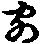下經文。明彼眾生在生死中。何由能解佛之智慧也。
緇州法師云。疏主引此經文似錯。經云。我身手有力。而不用之。身手有力謂衣裓。手有力而不用之。身有力謂机案。既言但以殷懃方便而拔濟之。故知不因身手。又云。以佛教門出三界者。故知不合有此文來。
疏云。上來三乘猶居分段者。此一段文意。是佛三七日前。樹下思惟化眾生事。釋迦如來。由未起化。眾生灼然在火宅中。故言猶居分段。又解。悉達太子。縱得成佛。縱已起化。三乘法仍未稟行。菩薩大人未登初地。二乘小智。即不聞法花。故知五乘眾生。並居分段。未出火宅故(云云)。
疏云。未與車名者。上來兩釋。三乘諸子。未登初地無漏智車。故云未與車名。
言得車者。如來初成道時。三乘之人。未出火宅。猶居分段。如來以悲智所誘。語言門外有三種車。汝等出來。吾為汝等造作此車。二乘聞此二乘言教車。得出火宅時。但得羊鹿。既證四諦理。迴心已後。受變易生死。索先許之車。爾時各賜諸子一大車。二乘且得大乘言教之車。方得車名。若菩薩大子。出宅已後。登於初地。得彼後得無漏智車。證二空智。爾時方名與車名。故知。在門外即得車名。其居門內。即分段生死。常為火宅之所燒煑。今令二乘迴心。即受變易。令登初地。即捨分段。故云得車也。
知大乘車體者。唯取初地已去無漏後智。而為其性。故此論云。欲入佛之智見者。令證不退地故。登彼初地。得證不退。上牛車故。以無漏因得。正名一乘之車。
問。菩薩登初地。得彼無漏智車上。二乘創迴心。猶在地前無車上。
答。菩薩證彼無漏智體。為車現得上。二乘初修者。證得後智。現與教車。亦名上。後決定得。故與車名。故下經言。二乘諸子。乘此寶乘。直至道場。自在無礙。故知出宅已後。乘寶乘時。正是行無漏因行。名為一乘也。餘可知。
疏云。果有結實酬因之能者。亦有疏本。為因之能。而無酬字。二義皆得。無勞改之。
言酬因者。以果酬因。是因之能。因能至果故。若言為者。亦為果作能。由有果故。為彼因家新發功能。故言因之能也。故知所因。祇擬證果。既至證果。有是酬因(云云)。
契秘賾者。契即契合契當。秘密秘要。賾謂深家黃賾。由能詮之教。契當真理秘要秘密之宗。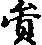賾幽微之義。是故妙也。囊者廣也。通者合義。羅者羅列。
尅上乘之奧業者。尅者能也取也。奧者深也。能至上乘深奧之業。為妙也。
美無分殫者。盡也。
菡萏者。蓮花開敷能鮮之見。花既菡萏。教亦踰揚。芙蕖者。蓮花之異名。爾雅云。芙蕖者。其葉荷。其莖加。加者刺。其根荷。其子蓮。
靈沼者。靈即神靈。沼謂池沼小水。此喻小乘之理。既以池沼為喻。豈同大乘法海深深廣無涯也。
問。既將池沼。喻彼小乘之理。云何名靈。
解者言。小乘望大。雖非究竟。證理斷惑離生死故。既證聖果。故置靈言。
蘤者。是白藂之花。故此蘤字。白邊作也。既白蓮花為喻。故同白蘤花為喻。為一乘之因。花藂若開。即得蓮實。因行既嚴。自然果滿。
標實結為花本者。蓮實若結成臺。花葉依之而起。佛智若能圓證。方識乘之本源也。
疏云。教理二種取譬蓮花者。自此已下。更搜括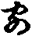頌文。重明妙法體性。如來從三昧起。意欲擊發二乘。令其驚問。故歎二深。謂證甚深。次阿含甚深。今我所說能詮之教者。猶證所詮之理等。二種甚深。此二甚深。非諸二乘所知故(云云)。
有所言說意趣難知者。我昔日所說三乘五乘教理行果。並不解我意不在小乘。意在大乘教理行果(云云)。故以佛智勸誘二乘。故從定起。歎二甚深。故知教理二種。譬彼蓮花。非獨行果為妙法體性也。
疏引論文。蓮花出水二義者。初不可盡義。問云。世之蓮花。夏榮秋顇。是可盡義。如何言不可盡。
答。論中取譬。不說可盡之花。意取蓮藕之中蓮花之性。彼蓮藕中。能有出水開敷之性不盡。淤埿之中。應自死而香。池水之中乾而不濕。有此功能。性不可盡。不同餘花。故取為喻。今此法花一乘理智。亦復如是。雖在生死大淤埿。不為生死所染。雖處二乘濁水。不為二乘所抅。有此體性不可盡。不同二乘有滅盡義。故下經云。以我此物。乃至況諸子等。所謂一乘功德相應善根。窮未來際。遍周法界。用而常滿。豈有增減。有二種義。一用不可盡。二滅不可盡。如上可知。
疏云後喻聲聞入眾中亦如菩薩當坐蓮花者。疏意。明二乘之人。與諸菩薩。與無量義經會。入眾中坐。聞經聽經。所說教理。名為法花。正為菩薩。傍為聲聞。當時二乘根機未熟。無心趣入。世尊意欲令其依彼一乘能詮之教。觀彼一乘所詮之理。令成漸悟。因此種性力故。後於法花會中。聞說法花。必欣一乘之理。故如菩薩當坐蓮花。何故言當。謂此諸二乘。在無量義經會中。大心未發。法花席內。方求一乘。是故言當坐也。即是因彼無量義。令得成漸悟。故下經云。復經少時。父知子意。乃至先心等。謂聞無量義經力。後於法花會。聞說一乘教理行果。迴心信解。即是正得坐蓮花上。如彼菩薩坐蓮花無異。至實當時唯在法花會中。以義況之。故言坐蓮花也。
疏云。對眾生性欲以辨無量。故為菩薩於無量義經會說一乘教理者。以辨菩薩多慈悲。以化生為務。觀彼眾生。要因能詮之教。方悟一乘理。欲令菩薩以教理二逗眾機故。以教理以解蓮花也。
疏云。若但以真如為妙法體即喻寬法狹者。疏主難紀國法師。以真如為妙法體。難意云。經取蓮花為喻。有開敷出水二義。若唯以真如為妙法體者。但有出水離二乘濁水一義。無彼開敷之義。何以故。以真如無生滅故。不可言其開敷。故云喻寬法狹(云云)。
疏云。況論釋經非解於此者。謂論中釋蓮花義。准疏無量義經十七名。因便釋第十六名妙法蓮花。非解於此者。此法花。非正解此法花經也。
第三依六釋。如來一抄說。一[又/又]依詮悟理。依理知行。由行得果。若無能詮。無由悟理。若悟理有邪分別。有邪分別。起諸惡行。起諸惡行故感眾生苦果。故依於此以立其名。又由教故生聞慧。依理故生思慧。依行故生修慧。因此三種得果。攝大乘云。聞等熏習無果生非道理。又經中立名有三類。一依人法。二依喻。或單或雙。綺互不定。何故如此。依人者。令知修六和敬故。六和敬故者。謂三業和。戒見和。施利和也。依法令知了義如了義教理諸大小乘法等故。依喻者。為引愚鈍眾生。故須法喻雙顯。廣喻明故。又從事從處。皆法中收。法名寬故。准於上義。教法立名可尋隨舉。恐繁不引。總談立名。無過於此。觀有所承稟不疑也。真諦三藏論中。并自釋目。疏言依人依法中。乃至以事為名者。初依人得名者。即以勝鬘阿彌陀無垢稱等。並是依人得名。依法者。即如大般涅槃摩訶般若等。並依法得名。依人依法兩義得名者。如維摩是。或依喻依法得名者。此經及金剛般若是。依處得名者。即伽耶山頂說勝鬘經。非但諸經題目從此法義而立其名。此即法品。亦依人依法依喻。諸品名思之可悉。
疏云。安樂在因見者現也即一義名中者。明此安樂不通因果故。一義名者。謂此能受持法花經人。今身得離厄怖。適悅身心。得人恭我供養。即現身安樂一義中取。或可安樂在果行因中。即二義中敘得。今身受持法花經是因。後身受安樂之報是果。見者現也。亦義名中。靈山會中寶塔涌現。即一義攝。不明能見。故非兩義。若見者見也。即二義名中通能故。見是能見之人。塔是所見之塔。所見之事。能所俱題。即二義攝。故云不定(法師品亦爾)。
于闐國者。此乳頭國。彼國神廟之前。有一童子。從地涌出。其間遂有乳頭。從地涌出。此小童子。飢即就喫。長成已後。以有一人分便於彼國而作王子。故名乳頭國也。
疏云。五失三不易者。一正倒失(〔實〕迴仍佚)。梵本多倒。翻為正也。如梵言聞如是。此云如是我聞。梵云波羅蜜多。應言彼岸到。此云到彼岸。梵云金剛能斷。此云能斷金剛等。皆是此倒。西方喚飯。有飯方喫故。此稱為喫飯。即是正倒失也。
第二文質失。梵語多質。此多文辭。如梵本云。四眾團稟坐。正視世尊眼不瞬。彼言即質。此云瞻仰世尊。目不暫捨。此語即文。又言。天公安安雨。糓米安安熟等。又云筍竹籔師子奮迅佛。又此經翻之時云。天見人人見天。叡法師云。應言人天交接兩得相見等。此之體例。非唯一文。且如佛說法。何文不能。意在益彼。利鈍殊根。愚智別性。若為質說。愚智並開。若為文說。智解愚昧。所以但取其義。不在其文。語直即義彰。華詞翳理。今乃文說。失經本文。持亦無力。故置是失。
四隨情取捨失。有所意好之廣說。皆心口不便。即隱其文句。即還如五性人。分明譯出五性之文。隱密一性之義。宗一性人。明明顯出性之文。隱彼五性之義。隱其自情。有取有捨也。
第五刪前略後失。世尊說法。多疊前生後。今翻譯唯存於後。刪前疊文。故置是失。亦言傍結先。謂如來說法。皆傍以喻會義。此並略之。即如藥王品中讚經。天授品中。乃傍說過去持經之事。至持品始勸持經。化城品亦是其例。欲說化城。先明過去十六王子大通智勝之事。後方說喻。名為傍結也。
三不易者。一時代不同不容易。佛是周昭王生。周穆王時滅。古今既殊。說法亦別。此乃同今翻出。異於古文。將古同今。於理不當。事不容異也。
二愚智隔不容易。昔說法結集。俱稱賢聖。二空理智雙融。今翻人並拘凡位。愚智既分。故不容易。
第三兢慢不容易。昔日結集法藏之時。兢兢若是。恐失一言經即無力。今翻譯者。平平若此。不生敬重。刪前略後。故云不容易。又云凡聖有殊不容易。今凡昔聖。故不容易。且兢兢者。履氷之皃也。恐踏於氷。沒即為死。謂羅漢兢兢。恐失聖言。陷於眾生。入生死故也。
妙法蓮花經一部七卷(一百二十五紙)。餘義如第一抄。彼古人安囑累品向前者。有四義。一妙音誡刑故。即疏云囑累品中令分身佛各還本土。乃至妙音來日何事被誡於此土中而生下劣之想。二獨禮多寶故。云疏云文下方涌出既稽首分身已下文是。三觀音奉珠故。即疏云觀音奉珠不應但為二分已下文是。四藥王受命故。即云又囑累品既明付囑已下文是。
二事乖角者。即是分身多寶。容住靈山。釋迦並令各還本土。何得分身多寶一去一留(故言二事乖角)。
七淨穢有殊難中。言文殊海會將至此間預在靈山忽有花現。此引文錯。龍宮海會欲來之時。靈山之中。元無花現。但是文殊菩薩。坐千葉蓮花。龍宮徒眾有坐蓮花。共花一時。非是預現。此亦未可。既言參到。如何忽有花現。若妙音言來到。有花現可知。
疏云。既非聞法寶以喜生。謂既非聞說三周一乘經言以喜生。乃是見客佛去以歡喜。此亦未然。只聞說三周竟歡喜亦得。
疏云。但是先放神力故現淨土。此下文會前外難妙音誡形。故知囑累合在於前。故此合云。世尊將開寶塔。即集身。先以神變穢令淨。此土既淨。如何淨華宿王智佛。慇懃誡彼妙音。汝往彼國。勿生下劣之想。今答云。妙音菩薩雖是上德。所知鄣未亡。取捨之心猶在。為彼土清淨。由此土本穢。恐彼妙音。俱見此土淨穢土相。而生譏毀。所以彼佛誡之。亦如夷狄之君。不如諸夏之亡。兼見無爽。非謂妙音至此。分身諸佛已還。而言此土唯穢非淨。上見下故。義亦可通(云云)。
疏云。如雖淨土還見靈山。乃至變不唯淨上見下故者。此謂疏主。例淨土中亦有穢土。謂分身諸佛。各令侍者指滿掬花詣靈山。天壽品中。文殊從海涌出。俱訪靈山。天壽品中既在囑累品前。分身猶在。此土皆淨。何有靈山。何妨淨中亦有穢土。上見下故。亦可以有本處名故。所以言詣靈山。義亦無爽。又塔品之中有淨土。不妨有彼靈山。妙音中被誡刑。何妨亦有於淨土。故知塔亦有靈山。無妨淨土攝。妙音雖被誡。亦是淨土収。故知囑累合在後也。
疏云。二佛同已下文。即會前別難。妙音致禮故。及以觀音奉珠故。若言妙音致禮。觀音奉珠。唯有二尊在會。分身已還者。天壽品。文殊唯禮二尊足。不禮分身。亦名應二尊在會分身已還。故知歸奉意別。何得例使通歸。又有言護法力。謂普賢品及後品示視者。是度量天地品。非囑累也。此無典誥。是偽經故。不可為明(云云)。
和會囑累品。居前居後。皆有所以。其囑累品。不在經末。言在前者。有諸家釋。名准據一義。若言囑累亦合居前。而不居後者。妙音請見多寶之時。塔門已開。釋迦于時即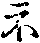多寶。妙音於後還見多寶如來。且此佛發願。欲開我塔。便集分身。既其已還。不可釋迦開也。妙音既見多寶塔。有重開之失。故知今為開者。只同前會。多寶文中集分身開也。以此而推。妙音來日被誡。此本是穢。囑累即合居前也。又若言囑累合居後。而不居前者。普賢品末。已有大眾歡喜作禮而去也。故知更無後品。又若言諸經囑累皆在經終。不合居前者。中途付囑。何妨於理。且如諸經得名。皆在經末。金剛般若。中即問名。佛即為答。此經名為金剛般若等。何故說經未了。中途而問。意欲即擬奉行故。今此品囑累。藥王品前說者。教經三周一乘既畢。即便付囑流行。藥王品等。廣說重經因緣。令受持者生於敬仰。此亦無妨。前後俱得(云云)。
又釋彰品次第事我前後者。所以妙音品在藥王品後而論者。若准經文。靈山一會。妙音菩薩未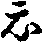說藥王品方至靈山。三周說經。妙音已至。何以知之妙音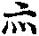等。佛言。妙音菩薩。為聽法花經故。普賢亦言。我於寶威德上王佛國。遙聞此娑婆世界說法花經。從彼而來。既云我為聽是經故而來至此。故知三周會中。妙音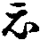至。若不先來至此會。藥王品復云言聽來。聽法何法。此品之中。無說經之處。又此品末有云。妙音至此。當品之中即道還國。若以還國。下觀音等品。妙音亦不得聞。何故言得為聽法花經故而來至此。故知妙音。三周之中已至於此。今言情見多寶而不見者。三周之中。塔門未開。土亦猶穢。准此已後得見佛者。因集分身。塔門開故。所以言見。據此道理。兩義相並皆不相關。又問。若爾。何故妙音品。藥王品後列之。故何三周之中。先置此品。
解云。妙音至此至為聽經而雖在前。以義文中不合先說。夫言不可疊道。義不可雙論。此妙音眾。既靈山會中之事。經集之時。阿難誦出。凡敘述事。次第排之。一會之中。極多事法。妙音妙音雖先即會。排此品類。合居後也。若不爾者。豈可當品之中來。當品之中言去。故知品者類也。於事同故。排為品。
解。如世間人。叔姪尊卑。姪卑而叔尊。世所共悉。有姪年長有叔卑。若立為得。不以姪年長故入叔類中。不以叔年卑故。其姪後還無行也。今此妙音及諸餘品。事儀如此。若准此理。妙音菩薩而被誡者。有何過耶。
又觀音品中。有具足妙相尊。先是結集家安置。計合作長行。為文短故。不更別生長行。如勝鬘經。亦有此義。勝鬘夫人者。即是波斯匿王之女。末利夫人所生。嫁與阿瑜舍國王為妃。去千餘里。彼國之中。先無佛法。世尊于時。祇洹精舍說法。父母知女聰明。乃寄書喚女。說佛道德不可思議。勝鬘夫人得母書已。即說偈云。今聞佛音聲。世所未曾有。若言真實者。我即應供養。復說偈言。仰惟佛世尊。為世間出。亦應懷慈愍。必令我得見。既說此偈已。佛於空中現微妙身。結集之人。遂作偈云。即生此念時。佛於空中現。普放淨光明。顯示無比身。勝鬘及眷屬。頭面接足禮。准此偈頌。合是長行。乘便為偈者。亦同此經具足妙相尊也。是勝鬘之語。偈云。哀愍覆護我。令法種增長。此世及後生。願佛常攝受。
呪咀諸毒藥還著於本人。外難云。豈佛世尊反害生命者。解云。有一人。與彼人有讎。符書厭禱。以諸毒藥。欲煞前人。前人既被呪咀。自覺身心不安。還即至心專念觀音。以念觀音善根增故。諸毒悉消。其人雖復呪咀前人。以其惡心多積毒害。既不念觀音。專惟煞害。故違反害。此乃積惡餘殃。禍惡積。豈是菩薩。又雖却著。未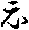令終。意欲令其發善心故。如前此經中常不輕菩薩。被諸四眾惡口罵詈。以嗔罵故。令諸四眾。千劫之中墮地獄中。雖初獲苦。後還發菩提心故。此亦如是。何所疑焉。然菩薩救苦。種種方便。若先苦後樂。菩薩即救。即常不輕。及呪咀等。是其事也。若先樂後樂。菩薩亦救。若先苦後苦。菩薩不救。若先樂後苦。菩薩亦不救(云云)。
疏云。如巧獵師善取熊羆者。如一熊羆在深窟中。獵師欲取。以三股鐵叉。將頭向前。堆把於後。先以一石打之。其羆嗔發。直趣於人。不知鐵叉穿其胸前。既趣不得。直至於死。合喻意者。初欲害人時。喻惡人呪咀及下毒藥。後趣被鐵叉刺身。喻合觀音菩薩還著於本人。將鐵叉喻觀音。將熊羆喻著毒藥者(云云)。
又如良醫善用返藥者。有一人。患水病。身大如甕。其家兄弟莫作何計。聞道芭豆與酒相違。可與其服。後令喫酒。終是不活。只得與死。其病人服芭荳已。非常熱渴。復與酒二升。一時飲盡。少時看之。遂便欲死。唯餘殘氣。更少時看。乃見地下水流滂沱。看其身體。如故無異。兄弟問言。體履何似。答云。今日亦應有活路也。粥五升一時喫盡。故知返藥。即其事也。初雖有損。後必為益。菩薩救生。亦復如是。
疏有頌既不乖宗者。此語錯。應言。有損既不乖宗。讀疏之者。狀似論量此頌。此語意者。解呪咀諸毒藥還著於本人之文。謂前雖有損。後必為益。
疏云。彼說乘同日光為喻者。明窮子品中。會昔窮子同於長者。勝鬘云。言乘是一。今說雲雨之喻。被乘同悉。一雨雖同。受理各別。日光雖一。受明不同。彼添法花經意如是。今時疏主。不許更有日光喻也。
又正法花妙法花及論。並無日光喻。論中所釋七喻三平等。亦無日光之文。
四從三逆者。四謂正法妙法本論添法經。排當第四故。三逆者。此三本經論。違前添法花。無日光為喻之文。故言三逆。有即違大宗通途。無即非乖成理。若依瓚法師。不許疏主斥日光之文。何以知。即法花亦有乘同之文。應言三從二逆。豈並通途。俱是聖教。何須非斥。若言天親菩薩造法花論。所明七喻三車等。無日光之文。即言無者。金剛般若論。亦是天親所釋。准經合有八種之相。論中如何但釋人相眾生壽者相我相等四種。不釋殘四。豈彼經中而無此文。故知未必以論為證(云云)。
又此經觀音一品別流行者。自佛法東流來。九百餘年。所翻譯經論。總有七種。單本。二重本譯經。三闕本經。四疑經。五拆出經。六偽經。七應瑞經。言單本經者。即涅槃等是。不重譯故。一翻已來。唯聞南地學士謝靈運。重錯其文。更不別譯。二重譯者。如維摩經般若法花金光明等。並數重譯。三闕本者。目錄有名。而無梵本。及無曾翻譯行之於世者也。四疑者。如法句經。道理契會大乘。然無梵本。及無譯時代。并無譯人等。五拆出。如觀音品等是。多心般若等也。於大品奉鉢品拆出。如盂蘭盆經。初無如是我聞。後無歡喜奉行。皆是其例。六偽者。如天公經。呪魅益[竺-二+下]植公等。如天公經云。清清虗虗。手把金瓶。推聲集郎。直入講堂中。又云。文殊作都講。普賢作維那等。此皆人作。非佛說也。七應瑞經。即高王觀世音經。高歡天子。有一人死。因專念觀音。夢中受得。後至都市。經三刀不死。所有因緣。應知從彼高歡標名。故稱高王觀世音經。
第五彰品之次第。自古相傳云。修多羅藏次第求。毗柰耶藏因緣求。阿毗達摩藏性相求。性相求者。唯明有漏無漏有為無為世出世間之法。體性更無次第。能生慧故。毗柰耶藏因緣求者。戒律之中。唯明因誰犯戒。得有此戒。緣某人犯有此戒。多明因緣。並是事法。亦無法相。亦無次第。唯戒藏所攝。修多羅藏次第求者。經之一教。前後名義。鉤鏁相連。多明品之次第序正流通。此唯經藏所攝。
疏云。一實而導彼歸途者。此為退菩提心故。昔聞大乘之法。中間廢忘。退求小乘。今欲令其歸本所引故。故云導彼歸途也。故法花第二云。我昔教汝志願佛道。汝今悉忘。而便自謂已得滅度。我今還欲令汝憶念本願所行道故。
返迹者。歸昔日所行之跡也。
智揚善巧妙應上根者。智揚即智慧。善巧即是方便。故方便品云。諸佛智慧甚深無量。
語演神功津窴邃理者。即是其智慧門難解難入(此中引文倒誦應知)。
疏中釋譬喻品云。領述授記文少。乃至寄其領述及為授記等者。瓚法師云。此言踈失。若以領述文少。即言不別生品。寄譬喻品明。所以不別為品者。復云囑累文極少。略寄神力品後明之。何得自別生品。故知疏家極為孟浪。今時解者。品如鶖子領述。及如來為授記。皆是比況者。即是譬喻。何妨皆得同名譬喻品。豈繁寄言。深為失矣。
今又難并州法師。若言領述授記皆是譬喻。故並同名譬喻品者。下文三周授記諸有領述。亦是比況。亦應並名譬喻。何得品號皆殊。迄至經終。儀法如此。故知非斥未即為准。
疏云。法身之體亦方便以宣揚者。此明真如法身。唯智證相應。今以言說中宣。故言方便宣揚。
疏云。既顯自他為寶重者。自。謂天授品中。如來身作國王。為求重法。捐捨國位。以寫此經。他。即分身多寶。為欲聽是經故。遠來至此也。
疏云。如來說法福事俱多恐眾生疑等下者。謂前蹔謗此經。或復頻蹙而懷疑惑。汝當聽說此人乃至無數劫等。又隨喜品中說。第五十人聞法花經能隨喜者功德。過前四百萬億那由他三千大千世界眾生。金銀七寶。又令得阿羅漢果。乃至不輕品中。受持此經。得六根清淨。又法師品中。有能於此經中。一念生隨喜者。我亦與授阿耨菩提記。此等福事。非分太過。恐眾生疑謂佛虗誑。故現舌相。表是真言。
第六釋經本文者。先序多家。然後依疏解釋。讀者應知。自漢朝已來。佛法東流。前英後哲。所講經論。并依文解釋。不生章段句數。至復後秦襄陽道安法師。方分章段。云經無大小。例開三段。謂序正流通。顯與西方親光菩薩般若論同。故知東流雖遠。英賢道合。時人謂安公為寶印手菩薩。彼有道士。名習鑿齒。極有才學。聞道安公博識內外辨才無滯。打門相命云。四海習鑿齒。故來相見耳。於是安公遣人報云。彌天釋道安。不久即相看。既言彌天。更過於四海。既出相看。安公先行。習氏嘲云。揚之簸之。糠粃在先。安答曰。濤之汰之。沙石在後。又以別日。安公就習氏園池。習氏嘲云。兔兔來何求。安公報云。故來覔羊頭。習氏又云。剃刀已淨堪用不。安公報云。已許神明合毛留。自餘事如高僧傳說。
吉藏開為三段。序分大家共同。正宗者。從方便品。至從地涌出品已來。明乘權乘實。從壽量品。至分別功德品半初格量頌末一長行一頌云。聞此壽量信解功德無有限量已上文。明方權實。方權實者。昔日菩提樹下成無上道者。是權化身。經云。我成道來等是。經三無數劫。三身四智早已圓滿。是真報身。乘權實可知。故乘是能乘之乘。身是所證之身。乘即所證之因。身是能證之果。故以十五品半。名正宗。如賢愚經。近善知識。即是序分。聽聞正法如理思惟。即正宗。依法修行。即流通也。亦可令生三慧。故須三段。序分令生聞慧等。亦可隨三根故須分三。序為上根。見即生解故。正宗為中根。丁寧正說方悟故。流通為下根。再三重說方領解故。亦可來有三緣。故分三段。親光菩薩依佛地論開三段者。一為教起因由緣分。二正教起說分。三依教奉行分。亦可序為除疑生信。正宗為破執令解。流通依法奉行。
今時疏主。自有二解中。復有一解。總有三解。初有八品而為正宗。從方便品。至授學無學人記品。正為三根說一乘記。所以是正宗。
二從方便品及法師品半為正宗。兼為八部授道記故。於此中為有意。謂方便品初彰二深。言一切聲聞辟支佛等所不能知。聲聞眾等皆生疑惑。今此八品。為破前疑。故與授記。為正宗。其法師品為正宗者。此亦方便品偈云。諸天及世人。一切眾生類。無能知佛者。五乘之人及一切眾生。皆不能知。今此法師品初。為一切眾生天龍八部人五乘等受記。即破前疑故。亦得名為正宗。餘十九品。名流通分。
第三解者。從方便品。至常不輕品已來。名正宗。神力已下為流通。如疏可知。淨法師以十九品為正宗者。為論釋七喻三車等。至壽量品。即無三車等。至常不輕品方盡。已後無故。為正宗可知。
疏云。若爾即古遵法師乃為指南者。又俗士劉歆(茂林反)劉白父子二。每至筆墨紙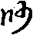以為戰諍之笏。何況甚深法藏。四海公子。一代當仁。至於章句。而無非斥。奉上斥云。吉藏法師。若以從方便品下十五品半而為正宗。謂明乘身權實。更取分別功德品半一長行一偈頌。俱諸大眾聞如來說壽量長遠。眾生獲益。即名正宗者。若爾。何但聞分別功德品獲益。從方便品。終至普賢品中。言三千大千世界微塵數數菩薩。乃至得百千萬億旋陀羅尼。及能行普賢道等。品品之中皆有利益。即古遵法師。初一品名序。已下迄至經終。皆言有益。乃為指南。今道。疏主此難。未必即然。真藏師意正宗中獲益者。自緣聞捨三歸一而得授記。聲聞之人因此獲益。言益雖同。聞法各別。以一乘獲益處。名為正宗。非一乘而獲者。名為流通。何爽於理(云云)。
疏云。讚證受命付令行者。此解十九品名流通分。讚解法師品。彼品之中。讚重人法。可師範解故。證二品。謂見寶塔品。提婆達多品。勸人生信。證說不虗故。受命解八品。謂持品。安樂行品。從地涌出品。如來壽量品。分別功德品。隨喜功德品。法師功德品。常不輕菩薩。此之八品。並稟命弘宣。付解二品。如來神力品。囑累品。慇懃付囑。便流通故。令行有六。
說境令知乘之權實者。謂說能詮之教語。顯所詮之理。令諸聽者心緣語義。語義是識心之境。即教理也。既識乘之是非。故捨權而取於實也。
說果令知身之真化。乃至具顯果因所成勝德者。從壽量品。至常不輕五品經。說果令知身之真化。謂二乘等。執佛於菩提樹下成等正覺。言報身。所有證得解脫。解脫知見。執為法身。隨刑六道。教化眾生。名為化身。又此經中。諸菩薩等從地涌出。諸二乘等皆生疑惑。言非佛化。故佛於壽量品中。廣說我出釋氏宮。去伽耶城道不遠。菩提樹下。成等正覺。自從王宮生。八相成道等。此是化身。即是令知身之化也。又說我成佛已來。甚大久遠。所成壽命。復陪上數。常在靈山及餘住處。天人常充滿等。即是身之真也。證之果者。即壽量品。明壽命長遠。久成佛。是證之因。即下四品。分別功德。隨喜。法師。常不輕等品也。
勸識於化求證於真。令識菩提樹下是化身。求證於真者。令行一乘之因。取一乘之果。即是壽量長遠法身之果(云云)。
然此中獲益人。總有五位。一信心人。二受持讀誦。三為人解說。四兼行六度。此之五人。能成勝德(云云)。
漸獲因果二勝德者。謂此皆是因中因果。故名漸獲。若是佛果位中。已圓滿得。不可言漸獲也。
言因中因果者。有因中因。因中果。有果中果。果中因。先言因中因者。功德品中。勸人持經等。喜品中。第五十人隨喜等。皆是因中因。因中果者。即是得無生忍。乃至四生三生得菩提。乃至能轉清淨法輪等。隨喜功德品中。隨喜聽聞。常得面貌端正。人相具足。又得乘天宮殿等。乃至法師功德品中。受持此經若誦等。此即是因。能得六千功德等。名為果。此皆是因中因果也。言果中因者。即前因中因果。此即帶果修因。總名果中因。佛果菩提。名果中果。
言二位勝德者。即前因中果。乃果中果是。又有已滿果。謂如來壽量品也。未滿果者。即分別功德隨喜等。並是因中果也。
菩薩知此遂便道證者。菩薩即是二乘等。迴心已去。並名菩薩。道證者。即分別功德品中。諸菩薩等。或有一生二三生證菩提等。是也。若論修證次第。先因後果。則言因果。若論顯修次第。先果後因。則言果因。謂先後果。令欣修。故言證之果因也。
具顯果因所成勝德者。即是覆標前義。從壽量品。迄至不輕品來。已明因果勝德之事。更無別意。自此已下八品。名為流通分(云云)。
疏云。示相付囑稟命行故者。示相。解神力品。謂如來出廣長舌相。上至梵天。表不虗言。故示相也。付囑。解囑累品。以金色之手。三摩菩薩之頂是。稟命行者。謂藥王品中及經末。皆受付囑。流通遠代也。流通中又有三。上即從法師寶天持等品。此為現證流通。安樂行涌出壽量分別隨喜法師不輕七品。此為學行流通。神力已下八品。為付囑流通。准論文序中。至分七種成就。將配論如疏可知。
疏言。山城圓滿表勝餘經偏得序名者。七種成就皆是序。如何此二偏得名。答曰。智者因喻得解。如世行人。出門已後皆是行人。唯有佂人。得行人名。又如作客。吉凶席中皆是作客。如其弔凶。不得言作客。又如草名是同。[黍*殳]芋偏得草名。然法明者。如十信心。即信等十種。若所論十種。皆是於信。唯只信偏得信名。
又如六塵。眼能見色。故名為塵。餘聲香等。亦是於色。亦是於塵。不得色名。唯只眼見。偏得色稱。此之山城亦復如是。雖通名序。此二偏得序名。
又七成就中。餘經無者有二。一小乘經無。二諸大乘中無。文殊現十種因故。
答。此經以說一乘道理。微妙甚深。會權歸實。廣為授記。又有多寶證經。流通付囑。皆是菩薩修行。不同餘經。故獨標勝。
初言序分者。自古相傳有四解。一發起。二證信。證信者。即此經初言如是我聞等六句。阿難引己及他為證。親從佛聞。以證此經。令他生信。二發起序者。即如欲說法花。先為諸菩薩。說大乘經名無量義。天雨花。地六動等。已為發起。說金剛般若經時。入城乞食洗足已。為發起序。維摩中。合五百盖以為一盖。變此穢方以為淨國。以為發起。說涅槃時。世尊以二月十五日。於晨朝時嚼楊枝時。發大音聲。普告三千大千世界。如來今夜常入涅槃。若有所疑。當咨汝所問。為最後問等。以為發起(云云)。
第二解者。初明通序。次明別序。古人解云。如是我聞等兩句。是通序。通一切經皆同有故。一時已下別序。說時方徒眾緇素八部。數量多少。各各別故。
若依紀國法師云。如是等六句。迄至爾時世尊四眾圍遶供養恭敬尊重讚歎已來。是通序。與諸餘經徒眾多少。雖復不同。通有六句故。從結跏已下經文。名為別序。現瑞放光。相不同故。或可退坐一面。是通序。爾時世尊已下。是別序。
第三解者。初阿難序。次如來序。如是我聞等。阿難出。名阿難序。欲說此經先雨花動地等。名如來序。
第四解者。真經序。像經序。真謂佛在世。先為諸菩薩。說大乘經等是。像經序者。謂佛滅後。諸羅漢等集法藏時。阿難自言如是我聞等六句是。此亦名經前序經後序。此經後序。是經前序之前。經前序。又是經後序之後。謂阿難序。在如來序後故。
次釋如是我聞等六句。自古諸德及論解釋。開合不同。乃有數宗。今略敘多少。初開作八句者。謂如是一句。我一。聞一。時一。佛一。住王城一。山一。眾一。總為八句。
第二。依真諦三藏。釋為七句。一如是。所聞之法。二我。能聞之人。三聞。親承音旨。四一時。說法時節。五佛。說教主。六住山城。說法之處所。七與大比丘眾等。所化之機。
第三。龍樹菩薩。造智度論。解大品釋為六句。一如是。所聞之法。二我聞。能聞之人。三一時。說教時。四佛。說教主。五住處。六所化機。親光菩薩。造般若論。亦為六句。同前龍樹論。自言。前三明弟子。後三證師說。一切修多羅。其事皆如是。
第四。世親菩薩。依佛地經。造佛地論。釋為五句。初如是我聞。顯己能聞。二時。三佛。四住處。五所化機。
第五。今自釋為四句。一如是一時等。皆是法。二我聞及比丘眾等。明能聞人。此等是僧。三佛。即佛。四事。即住處。
第六。經部論師。依成實論。釋為三句。謂佛法僧。佛為佛寶。如是一時住王城山等是法寶。我聞及大比丘眾等是僧寶。所以成實論云。三寶最吉祥。故我經初說也。
或可總為一句。並歸於法。
或可總無一句。即歸於如。故下經。諸法寂法寂相。至言宣。如楞伽經云。我成道來四十餘年。於其中不說一字。維摩又云。夫說法者無說無示。夫聽法者無聞無得。故知無說無示。是名說法。若據涅槃經下文言。未說法者如林中葉。其已說法者如海一渧。即應說也。應須釋之。
延法師解六句云。三句有言有義。三句有義無言。謂如是我聞一時三句。佛親自說。有義有言。佛在已下。但言某方某住處某徒眾。但有其義。而無其言。世尊當時。不的言方處及眾數故(云云)。
說之所由者。謂依臨涅槃。普告諸大眾。我於今夜定般涅槃。若有所疑。當恣汝所問。為最後問。阿難位居學地。憂未除。不知是化身。為言真滅。所以心復憂悔。不能自勝。於是阿[少/兔]樓馱及優波離。語阿難言。如來今日即有。明日即無。汝有所疑。何不問佛。阿難報言。我今癡狂。不知何問。於是阿[少/兔]樓馱。發四句問。如疏。佛答言。我滅度後。以波羅提木叉。為汝大師。若我在世無異此。謂佛在時。及佛滅後。皆依戒而行。當以戒為師也。波羅提木叉。此云隨順解脫戒。若能堅持禁戒。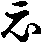能順至脫脫也。
第二問依何處住者。當依四念處住。所謂身受心法。此四上中下。總有三種觀。一假相觀。二事觀。三理觀。言假相觀者。即觀身不淨。四大假合。三十六物以成其身。由如囊盛於糞穢。令諸弟子知有漏煩惱等。以成其身。深可厭汙。名為集諦。二觀受是苦者。令知三界火宅。無處藏身。三苦八苦日夜煎煑。能如是觀。名為苦諦。三觀心無常者。識心遷變。念念不住。令知諸行無常住者。令證滅諦。故涅槃經云。諸行無常至寂滅為樂也。四觀法無我者。故中論偈云。諸佛或說我。或說於非我。諸法實相中。無我無非我。又般若經云。一切諸法。無我相至壽者相。若執法中有我相者。如來說言非菩薩也。作此觀者。能證二無我理。名為道諦。世尊何故令修假觀。為諸眾生不知此身本來虗偽。虗妄顛倒。為真實故。教諸弟子常修假觀。我滅度後。常依此住。
第二事觀者。以四念處分為五蘊。初身為色蘊。觀色不淨故。次受為受蘊。觀受是苦。世間之人。於下苦中便生樂相。不知苦樂二受。悉皆是苦。樂是假受。縱受人天妙樂果報。彼報若盡。不免無常。苦受是實。故下經云。佛說苦諦真實無異。遺教經云。日可令冷。月可令熱。佛說苦諦不可令樂。
四心為行識二蘊。令知心識本來無我。若不繫緣境。不依四念處住。即言我能然。餘不能爾。由如猿猴得樹。狂象無鈎。野馬無絆。穴鼻絕牛。名為事觀。
第三真實理觀者。唯理相應。更無緣慮。所有五蘊十二處十八界等。皆歸於空。同一法性。故多心經云。菩薩行深般若時。照見五蘊皆空。度一切苦厄等。此名為理觀。智度論說。有五種不淨。以成其身。一住處不淨者。謂識種子。九月之中。常居慈母生藏已下熟藏之上。尿屎坑邊。為安置處。故經偈云。是身為臰穢。不從花中生。亦不從瞻蔔。又不從實生。即其事也。
二種子不淨者。謂無始時來。阿賴耶識。結集為因。業風所吹。此識種子。在父母赤白精中。託攬為身。故名不淨。如有偈言。是身種不淨。非餘妙寶物。不由白淨生。但從穢道出。
三自性不淨者。謂三十六物。覆以薄皮。大小不淨充滿其中。名為不淨。如有偈言。地水火風質。能變為不淨。傾海洗此身。不能令香潔。
四相狀不淨者。謂九孔常流。眼出眵淚。耳出結聹。鼻中流涕。口中涎唾。大小便道流出屎尿。好衣外餝。美食內充。皆成不淨。如有偈言。種種不淨物。充滿於身中。常流出不止。如漏囊盛物。
五究竟不淨者。謂捨命已後。此之穢身。皆以虫狼為糞。放火為灰。爛壞為土。故此不淨。如有偈言。審諦觀此身。終必歸死處。難御無反覆。背恩如不見。
故知。昔雖好以塗熏。必歸臰穢。雖廣以綺餝。皆歸磨滅。故羅漢諫王偈言。眼是眵淚竅。鼻是穢涕囊。口為涎唾器。身為屎尿倉。大王無所知。為色所躭荒。貧道有慧眼。出家求道場。
第三。惡性比丘以梵擅治之。梵謂梵天。此為法。擅是於法。若有惡性高慢比丘。應以淨法治之。不須打罵。即嘿擯也。
第四當安何語者。一切經首。常置如是我聞六句等義。結集緣起者。
立之所由者。准智度論。如是者信相也。何故初即言信。准顯揚論。信有五種業。一信除不信為業。既信佛法。恭敬已深。縱逢邪緣。必不迴信。二同利為業。先自。後令他人之無信同除。除他故令生。俗書云。己所不欲。勿施於人。故須先信。三能得菩提資粮為業。即四十心初信也。四能趣善道為業。謂得四不壞信。能越惡道。人若無信。增長愚癡也。五增長淨信心為業。如其無信。心多混濁。既唯信心。性必清淨也。
故知。有信無智。增長愚癡。不能了別是非。緣愚癡。即生邪信也。若有智而無信。增長邪見。即是世智辨聰。增長異見。故此信心。亦以邪慧為體性。
又有四義。一止疑故立信。恐後眾生。於修多羅。疑非佛說。故安如是。為破疑故。二破執故令生信。有執之時不解。令破其執。令生信解。三止餘謗故。若言餘人所說。恐多生謗。今言阿難親從佛聞。人即生信。四正邪見故。外道經首。皆阿[禾*憂]二字。以為吉祥。初有吉故。中後亦吉。阿之言無。[禾*憂]之言有。一切諸法。不離有無二字。故初置之。今為蕳邪見。故置如是。
又信有二種。菩薩信心。深而不淺。無疑故。雖得二空理智。相欲取無上菩提。故下經云。除諸菩薩信力堅固者。必無退轉也。
次二乘之人。淺而不深。雖言有生空理智。而求小果。中路退還。不能更進求大乘。故下經云。我等若聞淨佛國土教化眾生。都無欣樂。
三凡夫之人。不深不淺。逢緣即起。猶若浮蓱。般若經云。凡夫之人。猶如輕毛。隨風東西。不能安住。俗詩云。客心無定所。如同不繫舟。又云。草命如點露等。謂無准定。即其事也。又書云。延陵致劒於松枯。又元[阿-可+白]臣卿。煞雞為信。千里相期。尅時而至。存其信也。故仁義禮智信。最在後者。意令先行信也。又猩猩能言不離禽獸。鸚鵡能言不離飛鳥。人之無信。雖有其言。何殊鳥。故夫子云。事親者能竭其力。事君能置其身。與朋友交。言而有信。雖曰未學。吾必謂之學矣。又初云如是令生信者。有三義。一令眾生信是佛所說。二信身中有佛性。三信未來必得成佛。有如斯義。故初置之。淨法師解信云。心決定為信體。口決定為信相者。此義不然。法相錯矣。准百法論中。夫決定者。即當勝解為體。夫信者。乃以清淨為體。故知錯也。然唯識論中。以清淨為體。以有信故。心始證淨。若其無信。心則混濁。若逢境即起。此以邪慧為體。亦可信者以假慧為體。
又唯識論云。於實得能。心清淨故。實有者四諦。得者信有三寶。能者信出世間善法。信此三故。名信清淨。是故經初者如是。意欲令生信三法故。後曰奉行生智故者。智慧既生。所以歡喜奉行也。
疏中十義釋信。趣極果之初因者。即資粮位也。果者。無上菩提之極果。初因者。地前四十心。資粮位初。以信為首。故云初因。
最初發起大菩提心須具十德者。依發菩提心經云。一親近善友。二供養諸佛。三修習善根。四志求勝法。五心常柔和。六遭苦能忍。七慈悲厚純。八深心平等。九愛樂大乘。十求佛智慧。
起三妙觀者。厭離有為心。即誓斷一切惡。律儀戒也。所有十方世界如虗空惡業。願皆斷盡。亦是三德之中。功德法身之因也。二求無上菩提心。即誓修一切善。攝善法戒也。十方世界如虗空善。願皆盡修。即是智德之因也。報身因也。三為度有情以。即誓度一切眾生。謂饒益有情戒也。十方世界所有眾生。願皆度盡。名為恩德。即是化身之因也。故稱三妙觀。亦是三聚淨戒。三身之因。圓成三德。
疏引攝論云。清淨增上力等者。清淨即是於信。即疏云大菩提心。以善根為自體。善根之清淨也。增上力者。謂強緣也。
疏云以善友為緣也。堅固心勝進者。即疏云不退屈為策發。策發身以。道始勝進。言策發者。亦退屈。即須專心趣求。更無餘想。發大誓願。以自邀誓。俗士中發心志操也。
二入諦理之機漸者。即加行德也。二乘之人。得入見道初果。證生空理。菩薩之人。在加行位。將入初地。證二無我理法。須向善根中。首有五根五力。方始能證二空智。根力之初。皆有信根。有信力故。一切有漏無漏之善。因此事生。有信力故。諸魔不能屈伏。若依并州法師。應言入諦理之鳴漸。鳴漸者。如鳴鸖欲飛。初一尺二尺。乃至一丈十丈。乃至冲天。冲天之高。皆由漸飛之勢。謂大小二乘欲入聖道。乃以佛果。要須信根信力。方入見道。從見道入修道。修道入無學道。乃至成佛。成佛之因皆由生信。故名鳴漸。准薩婆多宗。四念處在暖位。四善根在頂。五根在忍。五力在世第一。若大乘宗。五根在暖。五力在忍世第一位中。此加行中首。有五根五力故。萬善以茲而生。四魔不能為害。方得入於見道。證取真如。
言通妙真之證淨者。即道德也。通者達也。妙謂妙智。真謂真如。淨謂七淨信。復由證此淨妙真如四諦理。故入見道。入見道已。即能於三寶及戒。而能淨信。然此戒者。是聖所愛戒。道共定共俱戒也。謂但能於三寶所。生淨信心。聖道之戒。自然生也。如論中喻云。佛寶如能治病人。法寶如藥方。僧寶如看病人。闕一不可。令諸眾生。於三寶所。起此三心。聖所愛戒自然增長。戒增長故。得生人天。上妙果報。即離貧賤因也。故初言如是令生信也(四不壞信緣如別抄說)。然此經中。不正解淨字。下文但有遠塵離垢得法眼淨。然非正。餘文云有佛子心淨等。亦是淨信之義。又解。佛寶者導師。法寶如導師。僧寶如良伴。戒如所乘之騎。人佛法人。欲求無上法寶。必須世尊為大導師。引接眾生。入法正道。又須親近出家善友。以為伴侶。修持淨戒。以為乘騎。方引至於佛果寶所。既至寶所。離貧賤之因。恭敬三寶。故能越惡道。由此義故。初言如是令信心也。
四荷至德之嘉依者。即修道也。荷者負也擔也。至德者。謂佛果賢曰德。家者善也。立信者是彼常樂我淨之善因。欲證入此四。皆須有信。
食法味之家手者。夫欲喫食。要須有手。欲食法味。非信不能。故言信為家手。
言如大龍象者。為是龍如象。為是象即龍。龍象各別。有人解云。龍象各別。今則不然。謂帝釋放諸大象於黑山中。山中有龍宮。令諸龍等與象和合。由生象子。是龍體胤。故名龍象。龍象日行一萬餘里。如漢帝於嵐州大龍池邊。故諸馬務。因即生駒。名為龍馬。故取龍象以摧怨敵。以喻入道之人。能斷煩惱。威德高遠。猶如龍象也。
以捨為牙者。如象有牙。能拒怨敵。人有於捨。能滅貪嗔。一切煩惱無能為害者。即以無貪等為捨也。
以念為頸者。象有頸故。頸頭相連。人若有念。任持不忘。一切善業相續不斷。
并州師云。今言頭者。意取兩眼。能見道路。最聰明故。喻正體後得二智。能善分別邪正道故。
於其兩肩擔集善法者。即慚愧為兩肩也。以慚愧故。能擔集善法。崇重賢善。輕拒暴惡。亦可言前既以慧為頭。此戒定為兩肩也。
五七聖財之元胎者。初始胎者亦始也。如基元初也。始并胎者。如兒在胎名初也。此聖財對治世間三種財故。一增長財。謂令人案磨斫風搥斧之類。而能去諸疹。增長肌膚。亦名為財。二適悅財。學者大商元規法寶者。謂學法者。由如商家。以福德易智慧。以智慧易福德。如俗市易。名之為商家。喻金銀綵帛之類。同此寶物。能令適悅故。三吉祥財。謂四時八節贈賞百索調達之類也。西方人人。至於時節。多贈吉祥茅草鮮花之屬。以表吉祥故。
又依瑜伽論中。世出世財對治。總有十五。總為頌曰。行樂不通六。時地窮引脫。足往苦惡對。灾害燒無斷。
第一行者。謂世間財寶。增長惡行。必定令人沉淪生死。出世聖財。能生善行。令諸行人清昇彼岸。
二樂者。世間之財。唯得一身之樂。王官逼迫。常生愁惱。出世聖財。必歸常樂。
三世間五欲財物。不通六根。唯濟色欲二界。躭樂財物。出世聖財。通於六根。廣陰三界。濟於四生五欲故。
四世間財寶。時有時無。縱暢一生。命終還散。出世聖財。盡恒沙劫。常時有故。
六盡者。世間財用有窮盡。出世聖財。歷劫無盡。即蓮花出水有不可盡義。譬如一燈然百千燈。冥者皆明。明終不盡。
七引者。世間財能引入生死。沉淪苦海。出世聖財。能引行人至菩提故。
八脫者。世間財五家有分。王賊水火不孝子。共用為主。有可脫義。出世財寶得不喪。歷劫逾明。
九往者。世間財。不能令人往到涅槃。出世聖財。能引眾生。出生死故。
十足者。世間財寶。縱得千億。慳惜轉增。施設於人。終不厭足。出世財寶。洽放貧人。縱滿塵劫。無有慳惜。令諸眾生。皆足用故。
十一苦惱者。世間財寶。縱滿百千萬。苦惱更多。以繫屬王被駈逐故。而不自在。出世聖財。用周法界。而無愁惱。故釋賦云。多求空事苦事苦惱。少欲即有涅槃。
十二惡對治者。世間財寶。恐人劫脫。常應守護。而不睡眠。出世財寶。蕭然無滯。故釋子賦言。善哉釋子。任性沉浮。類簪去俗。捨去無憂等。此中應說。以翻子高稱快樂因緣(云云)。
十三灾者。世間財寶。資長五欲之身。雖望安身。必為灾害。故彼論云。世間大灾。無過生老病死。妃憶桃李之容。像逼桑榆之歲。且初生之時。常居穢惡之處。頭白面皺。人所不喜。坐起呻吟。餘命無幾。一旦命終。橫屍地上。色變汙流。賤生平愛子。遠離不看。雖蹔哭時。人知還笑。故知此身實為灾也。
十四燒惱者。彼論喻云。如人患疥。向火炙之。初快癢故。遂以手把。不知少時痛之難忍。眾生之身。躭財愛色。競覓名利。由如向火快癢之時。却墜惡道之中。何殊搔疥之痛。
十五無斷。世間財寶。有斷盡期。出世聖財。必無斷盡。故下經云。以此乘物。周給一國。猶尚不匱。何況諸子。
六善九因之俶樂。俶樂者初始義也。春即俶為初。落是秋之初。故爾雅云。俶落權輿肇殂元始等。皆初始義也。
問。何故列名但有八因。解云。以其先信心。方始有欲。信為欲依。故希望故。此之八因。皆以信為初。以善法為本。有善方信。信於善生。
善九因者。初單列名。次以配屬。三依瑜伽論。一句列名。一句復釋。復有一一解釋(如疏可知)。
言欲為所依起悕望者。希謂希憶。望謂求望。故名為欲。然欲有三義。一善欲。二不善欲。三無記欲。初善欲者。有四種善。一世間善。謂起願希求。唯樂世間三界果報。然世間欲中云。初求欲界。五塵境界妙物。如色等。二求色界。四禪及已離喜樂灌灑其身等果報。三求無色界。非想非非想等。
三緣覺欲。希求緣生。自利樂故。
四菩薩欲。修六波羅密。自他利故。然世間欲望。三塗極苦。雖是於善。望彼三乘。還是於苦。今言欲為根本者。即是希望無上菩提也。若二乘人。斷煩惱障。希證有餘涅槃。菩薩之人。斷所知障。希證無住涅槃。故言希欲也。
二作意者。即百法論遍行五中。作意為性。既於菩薩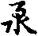望為欲。還須驚覺心王。求取菩提。無退屈故。
三觸所集起者。百法論中。觸為體性。既其希須。懃勞作意。不願世間不善無記起心。唯求妙菩提果。即以菩提為體性緣故。如作西方業者。一心正念阿彌陀佛。十念成就。得生西方。即將心王所。對彼西方。西方即是勝上緣也。
四受所引攝領在心故者。如聽講既在解勝之言。起心希學。必須作意領受。攝心任持。若於聞思修三慧之中。聽已不受。何殊寫清水於覆盆。勞而無益。
五定為增上心微寂故者。欲得慧生。先須禪定。心如不定。唯事攀緣。心亂不安。慧何起。故言定能發慧。慧從定生也。小乘之人。即須白骨水火林木不淨無我界分別觀等。若菩薩之人。作唯識無相無生真如三性觀等。入此觀已。心意清淨。即樂其中。故詩云。入定觀空有。出定空有吟。送將出入定。復觀空有心。偈云。菩薩清凉月。猶如畢竟空。眾生心水淨。菩提影現中。又如大澤長川滄波萬頃。澄空散彩對暎雲天。眾生定心亦復如是。必須清淨皎潔。遠離攀緣。智慧雲天。菩提覆彩。皎皎清澈。朗然當心。故詩云。水闊還香遠。川長雲影深。故須定也。
六慧為最勝擇善惡故者。既因禪定而得慧生。應須分別是非邪正。若無有慧。必沉外道邪見教中。既能簡擇。唯希正覺。此最勝妙。喻云。蒲州法師講時。初有多人。後唯一女。法師問言。何因不向餘處聽。答云。弟子見僧多處。即是好講。弟子但只好心。亦不解法師言語。法師歎云。此女人者。即是解瑜伽論。何以故。慧能蕳擇最勝故。
七解脫為堅固息纏縛故者。既能定慧雙融。即應二鄣俱喪。煩惱所知既離。故稱解脫堅固。不復更染。即息纏縛故。
八出離為後邊覺道滿故者。既出二種生死。即志求一妙法身涅槃。故言覺道滿故。後邊身者。即法身也。涅槃經云。如來身者。是後邊身。離食身。即其義也。如是八種法出離由何。謂由解脫。解脫由何。由於智慧。如是乃至。欲為何事。唯由信心。故疏云信既為欲依。故最初令起。今言如是者。為令生信也。或機者。如戶樞也。故書樞機一發。榮辱之至。亦是初也。
七啟機門之勝手。啟者會也發也。機者所作之機也。謂彼眾生。沉淪五苦。在淤泥中。如來起大慈大悲。廣說教法。初明序分。令信如。先令眾生以信為手。後說正宗。會三歸一。由如教手向下。相就眾生。即須信手向上。兩手相接。能拔苦故。諸一切種諸冥滅。拔眾生出生死淤泥。即其義也。謂諸眾生所覆起煩惱鄣。鄣於涅槃。沉沒欲流。名煩惱鄣。又迷無明。障智慧故。名所知障。今者如來說諸教法。令眾生斷煩惱障。證大涅槃。名為斷德。又令智慧日日增長。除所知鄣。名曰智德。又拔眾生泥。即是恩德。今言泥者。以異熟識為土。煩惱無明為水。無始時來相間雜。故名為泥。或以業為水。能招無記之身。令諸眾生出生入死。故號為泥。又信如手者。譬乘大舟汎於溟海。若其無手。飄沒蒼生波。有手動攬。一無沉溺。故知人無兩手。何以乘舟。人若無信。如何修道。故安如是。初令生信。
然此信心。百法論二十一心所有法中之一數也。如其有信。兼遇善緣。二十一法念念增長。如逢惡緣。生於不信。二十一法。剎那剎那。生歸於不善。汎不息顛墜淤泥。故起世經云。閻羅王為罪人說偈云。汝得人身不修善。如至寶山空手歸。汝今自造還自受。如今叫喚欲何為(云云)。
八湛心水之清珠者。以有信故。心即清淨。若其無信。性即渾黃。故唯識論云。信如水清珠。能清濁水。西方之人。欲清一池濁水。將一竹竿。以縷繼頭。將彼明珠以繫綖頭。又安置輪細。細下有珠。置濁水中。一池水應時清潔。上合喻者。如來大師由如竹竿。說法猶如縷綖。明月寶珠猶如於信。眾生若聞世尊說法一四句偈。生淨信心。念念除滅無量劫來生死濁水。故言信如清珠也。應說菩薩清凉月偈記。
九建名道之良資者。名謂名聞。道謂道德。名謂無名天地始。有名萬物母。亦可名非常名。道者即道可道非常道。良謂善也美也。資謂流行也。君子立身行道。善仁義智信。以為道德也。孔子曰。先王有至德要道以順天下者。即仁義禮智信也。今言名道者。即禮義也。故知君染依於信。臣依於忠。父依於慈。子依於孝。虫依翼。魚依尾。鳥依於孚。獸依乳。以訓養生也。左丘明云。兵食信三不可棄。然國無兵。無以摧怨敵。國無食。百姓飢荒。本既不寧。邦安何也。
然信者。國無信立。君臣之道不行。君臣無信。禍亂發作。故知信者君子之國也。如其有信。即知有國也。呂氏春秋云。口信之為功大矣。天行不信。則不能成其歲。地行不信。則草木不大。春之得風。風不信。則其花不開。憂之得暑。暑不信。則萬物不長。秋之得雨。雨不信。則其穀不堅。冬之得寒。寒不信。則其地不剛。故知以天地之大。四時之化。由不能信以不信成。豈呪人乎。
十欵衷誠之佳待者。欵謂曲也。異也。忠誠者信也。佳者好也。待者禮也。尊者上也。且有明信。沼沚者小池水。毛者謂土毛也。毛草翡翠。毛猫牛尾及兔毛等。蘋者大浮萍也。蘩者。春秋言婆薺。婆薺者即婆呵也。蘊藻者海藻也。可薦者貢進也。羞者上也。謂此毛草。豈是珍奇。向海將住云為異。意欲明其皆有信也。
而況君子結二國之信者。齊魯二國。常相征伐。魯國求和。齊云。汝鼎來方與汝和。魯國與鼎。仍不肯受。恐復重索。邀令信人。亦名季札展送來。我始能受。若非此人。我終不受。恐是偽故。季展即魯大夫也。
言大車無輗者。四馬車中安龍頭及身以橫木貫之。一馬牽即行。名之為輗。
又有依春秋解二國之信云。秦魏不和。恒相征伐。後魏索和。秦邀魏言。汝得三足寶鼎。送我國來。我即和也。魏恡寶鼎。還別澍一鼎。以送秦國。秦主報言。汝若令柳下惠及委布送鼎來。我與授取。如其魏主自來。我亦不受。為彼二子有其仁信。不狂於我。魏主令柳下惠及季希卿。將此鼎賞與秦主。季希秦言。臣不能去。此鼎實偽。不可報秦國是實鼎。魏主大嗔。季希奏言。信者是臣之國。鼎者是陛下之國。陛下豈將偽鼎。而令臣失信耶。臣乍煞身。不能失信。魏主難言。不信萬乘之國。而信二子二言者。皆由信也。即延陵置信。由掛劒於松枝。及亡名法師疏事。若依疏合。取春秋第一周鄭交質。正合疏意。應撿之。
又解。信義有二種。汎大溟海。假手以行舟。度生死河。行信以發慧(即出生死故)。遊壙野而有手。持甲杖以捍怨家。出生死而有信。信發慧而斷煩惱(即能發慧解)。
又前之十門。依真俗解。必須心有清淨。信意發方生。心水混濁。則無信意。未知此經三周之中。何文明於清淨信義。
解云。下經初周云。諸佛出於五濁惡世。謂劫濁乃至命濁。眾生垢重慳貪嫉妒。成就諸佛以方便。於一佛乘。分別說有三乘。即由心濁不信。於一分三。今既說一故清淨。下經云。有慚愧至廣讚一乘道。又佛子心淨等。故知心淨即是信心。信心既出。故說一乘也。
第二周中。汝舍利弗。尚於此經以信得入。乃至非己智分。又言。若人信歸佛等。
第三周中。諸比丘。若如來自知涅槃時到。眾有清淨等。故欲入二乘之捨智。必須有信心。故前言信為入法之初機。即其義也。
問。何須發心而出信意。解云。有四種。一見法欲滅發心。二見惡業受苦發心。三見佛神通發心。四讀誦大乘。諦觀其理。由斯四義。方發信心。
正釋其文依四義轉者。如可知。轉者生也起也。雖言四義。子細尋之。乃有七義。初依譬喻轉下。即以此喻彼。或當所說已下。以今況古。第二之中亦有二句。初近遠法之教誨。或字已下。即之教誨。第三唯一。謂問答轉。第四亦有二。初即許可轉。第二或字已下。信可轉。總成七句。
并州法師云。此有三句。一依譬喻轉。二依方便轉。三以今況古轉。初譬喻轉者。如有說言。如是須達富貴。如北方毗沙門相似。北方天王。功德最勝。故偏舉之。或如是堂中西柱團直。與東柱無異。即是譬喻。或可如是此人聰明監識。如彼朗日。能除暗瞑。更無有異。皆譬喻轉。
法中合者。謂阿難言。如是今日說。如昔如來所說。更無有異。故言如是。
三以今況古轉者。謂如來昔日所說。是本質教。我今所說。修多羅章句。亦令捨權取實。行一乘因。證一乘果。如我昔聞更無有異者。是影像教。我雖不能親證。然我所說如是文句影像。如我昔聞。定無有異也。或可阿難所傳如是文句。是本質教。眾生聽聞稟之修行。是影像教。自餘亦本亦影像者。就阿難一人。望佛是影。若望眾生。還是本質。非本非影者。就眾生。阿難傳教故非本。不親聞佛所說。又非影像。餘可知。
依問答轉者。如疏可知。此方問答。言汝向寺去。答言。阿我已兩即言阿(烏郎反)。准流俗中。只合言若(而也反)。若者若也。若即如也。還如是如此及是等語也。
依許可轉者。如疏可知。准金剛般若經中。亦有許可轉。須菩提問言。應云何住。云何降伏其心。佛答言。應如是住至其心。初即許可。後方廣陳降伏住道之義。亦許可轉。又阿難化弟子之中。總持第一。領受佛語。如瓶寫水置於盆等。更無遺漏。所以今日能傳教法。與佛無異。即涅槃經云。金剛銅鐵寶器雖殊。互盛得水。味無差別。不可以器別故水味有殊。不可以水味不殊言器是一。佛之說教。傳與。
阿難。阿難領受。傳與諸大菩薩及大聲聞。菩薩等轉又我等。傳人雖殊。教體唯一。不可以別故與教有差。不可以教不殊言機是一。合喻可知。
章疏家。取真諦三藏明結集三事。解如是者。稍似不當。若出如是來意。引此即得。若以如是義不當也(此中應敘結集緣起。如餘抄說)如是者感應之端也。此是武都山隱士劉虬註法花經之語也。并州法師說喻云。今言感應等語者。如似何物。如馬蜂之類。土中舍上。鑽為穿穴。乃取草中青虫及蜘蛛等。於其穴中。日別呪曰。似我似我。如是經歷多日。其虫頭上兩角乃生。更經多時。肚下六脚又生。其腰纖細。如蜂無異。羽翼成長。如彼大蜂。飛騰無異。以法合者。其虫即是感。其蜂即是應。感應相快。與蜂無異。諸佛化生亦復如是。眾生有感。如來即應。為說妙法。令入道中。如將虫來置於窠穴。根機既熟。為授記言。汝等眾生。於我滅後乃至現在。若能於法花經。一念生隨喜心者。我皆與授阿耨菩提之記。即是呪云似我似我也。既得授記。因即悟道。正體後得二智俱生。如彼虫頭生於兩角。能行六度。如虫六脚。神通自在遊歷十方。於諸佛所聽聞正法。如彼虫蜂飛騰自在。故云如是者感應之瑞也。
作呼轍者。謂經初之如是兩字。能呼。即一部經中所明。權實理事。如是俗。如是有如空。如是性如是相。悉皆如是故。初言轍者謂轍車。盡地轍底。亦如言雍州。兩字能呼。一切百姓。無不盡矣。
長耳三藏以三寶釋如是者。善得經意也。故論云。三寶最吉祥。故我經初說。且就佛寶。三世諸佛共說不異名如等者。下經自云。十方三世佛。說法之儀式。我今亦如是。說無分別法。又云。從久至如是說。
二就法寶者。法寶相古今不異故名為如等者。下云。所謂諸法如是相如是性。如是果報本末究竟等。即是就法明如是。又云。如是性相義。至乃能知是事。即古今不異。名之為如也。唯識論云。真謂真實。如謂如常。亦古今不異之義也。
三就僧寶。如疏可知。
又言。兩物相似曰如。一物無非曰是。謂此左手。恰如右手。名之為如。即如如意。義是如意。既無餘物。名之為是。謂佛所說一切法藏。與過去佛。更無有異。阿難所傳亦無有異。名之為如。阿難親從佛聞。定是釋迦所說。名之為是。故言如是。
上來所說如是。總有十五解。一立之所以。二智度論有一釋。三佛地論有四釋。四真諦三藏法師一釋。註法花一釋。註無量義一。[玩-兀+正]公一。光宅一。梁武帝一。長耳三藏三解。因釋如是之言。別出三藏解釋。
依真俗解者。契真曰如。會俗稱是。如所說法。常依二言。故言如是。
依師資解者。阿難所說。如於佛語。師弟相承。簡不相似。故稱為是。
依教化者。如說法者。教前人云。汝當如是發菩提心。明此教化。發云如是。
依揩定者。如即揩法。是即定詞。如佛所說。一切皆是。故言如是。
依舉喻解者。如見世尊。及阿難說經之時。威德熾盛。如日光明。當知此人所說必是。故言如是。
依審定者。有人言。汝之所說。可審定耶。答言。如是之法。我昔具聞。此事如是。
依是解者。如斯之言。是佛口說。故言如是。
依引況者。如所說法。如過去佛所說不異。故云如是。
俱融解者。謂動靜雙融。一異俱喪。唯如為是。故言如是(云云)。
次我聞者。此中經疏分為四門。初明我義。二立我所由。三出聞體性。四問答妨難。
疏云。非謂我者定屬一人者。此是故人之意。謂在經會萬二千人俱。乃至菩薩八萬人等。並各有我。皆悉同聞。故云非一人也。
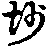法師云。將結集時。曼殊室利。及阿難陀諸羅漢等。共結集云。如是甚深名句文義。我昔所聞。故稱如是。等取餘人。
又何故但言阿難我聞。謂能具彼根處勝故。根謂具彼利根。餘人愚鈍。非利根故。處謂住於人天處故。故曰自稱我。不舉餘人。非如龍鬼。雖有聰明。是器非處。非如愚人是處非器。阿難既具。故稱我聞。
疏云。然我有三一妄所執我謂外道等所橫計我者。謂唯識中。吠世師計二十五諦。及勝論師計我等。略有三種。第一執我者。謂體常周遍。量同虗空。隨所遠業受苦樂故。第二執我者。謂我體雖常。其量不定。隨身大小。有卷舒故。第三執我者。謂我體至細。如一極微。潛轉身中作事業故。若依毗婆沙對法唯識第六等論。謂我有二種。一遍計所執我。即薩迦耶是。二數取趣我。即補特伽羅是。此我通於外道凡夫橫計。即世布我也。言數取趣者。謂前異熟滅。後異熟生。數取諸趣。故云數取趣。靜法師疏云。寒雲低復舉。落雪斷還連。又靜三藏云。更緣諸趣。名補特伽羅。謂生已更生。緣諸趣故。名為更緣。
就薩迦耶見中。復分三。分別行緣蘊我。謂分別分五蘊。橫計解行故。緣謂緣蘊作行解也。二分別所起我。若准分別綠蘊我。不分別所起我。我即有廿。且初從色蘊。一執色是我。二有諸色。三色屬於我。四我在色中。色蘊既然。四蘊皆爾。五蘊即成二十句也。
二分別所起我。此於我境上起。前行緣蘊我。但於五蘊上起。若分別行緣蘊我。及分別所起我。有六十五。且初色蘊為能執我體。即取餘四蘊。為所分別我。且初中受蘊。一我有諸受。即受是我瓔珞諸受用物也。二受屬於我。即受是我僮僕。三我在受中。是我窟宅。酬上三句。即想蘊。我有諸想。想屬於我。我在想中。亦准前瓔珞等。亦配上三句。此二句既爾。行識准前知。既一蘊下有三句我。四句即成十二。兼取能執我一。即成十三。既色蘊為頭有十三。次受蘊為頭亦有十三。乃至轉次以下。識蘊為能執我體。亦有十三。五蘊各有十三。即成六十五我。外道等虗妄所執橫計我也。
第二出我所以。略有四句。一有依於無。二無依於有。三無依於無。四有依於有。初有依於無者。如外道等。執有龜毛菟角。不知毛角本體是無。以見牛有角。謂菟亦有。又如世間人忽然死已。火焚燒並從灰燼。又五思念當情當情。名之為有。死人無體。故名為無。眾生邪見。執遍計我。名之為有。更執有體。即是為無也。
二無依有者。如人夜行。有見杌木。將為人鬼。生驚怕心。杌木非人。名之為無。杌木有體。故名為有。亦如空花是無。眼病是有。見眼病故。見彼空花。即無依有。眾生亦爾。有漏五薀雖復是有。於我強於其上遍計執我。即無依有。
三無依於無者。即是遍計所執本。更於其上。起自他分別往來。又是虗故。名依於故。亦可五薀四大。本來是無。於其薀上。強於我。又於是無。此執五薀身是我。名為總我。於中執有作用是別我。即依總我生依於分別。名為別。如安慧師云。見相二分。是遍計所執。體性是空。即於此相見二分之上。起遍計所執。是一重妄。又於妄上受執於我。即是二重妄。故言無依於無。若依護法論師。見相二分。是依他起性。
四有依於有者。涅槃德中。真如之理。體常住故。名之為有。此涅槃德中。實有常樂我淨故。即有依於有。前三依。依遍計強執有我。後一依涅槃四德。實有真我。
二假施設我者。即涅槃理中。常樂我淨也。為欲除二乘四倒。假設我故。凡夫執有漏五薀之身。為常樂我淨。此即無常計常。於苦計樂。無我計我。不淨計淨。
二乘之人。厭離生死。求樂涅槃。唯作無常無樂無我無淨等觀。此即二乘迷涅槃言無我。凡夫迷生死言有我。故今破之。外人問言。凡夫理然是倒。二乘邪亦是倒。解云。涅槃理中。實有常樂我淨假設。據實而論。真理中唯智相應。蕭然冥會。此但無名相中。假施設故。所以中論偈言。諸佛或說我。或說於無我。諸法實相中。無我無非我。諸佛或說我。說佛果位中。有常樂我淨。或說於無我者。凡夫之中。無常樂我淨。並皆是遍計所執。諸法實相中無我無非我。無我者。無外道凡夫之我。無非我者。有涅槃常樂我淨之我。即智度論中。有四悉擅。悉擅者宗也。一世間悉擅。即有於我。二第一義悉擅。即言無我。三各各為人悉擅。即無我無非我。四對治悉擅。三中皆有對治。謂世間對治出世間也。
三世流布我者。喻如提羅瓔鳥食油麻花。以食花故。遂損其油。時人呼為食油之鳥。今之立名亦復如是。提婆達多是天授。耶若達多是祠授。如此方立名。言思忠思孝思禮等。據其身中。實無忠無孝。假施設故。立名字也。
如世間立名多有不便。昔時虢王有弟。出作外官。其語吃。後虢王令一官人。往彼相看。其彼官人見來欲問。言虢王好在不。為語吃。乃重言虢王虢王。傍人不隨口即虢廿餘虢王見虢已。語既不得。始於庭住作字。乃至出世云為病。餘人不解。莫[怡-台+存](云云)。
言今阿難稱不同前二即無我之大我者。不同外道凡夫橫計執我。不同大般涅槃強施設我。今阿難稱我。即是世間流布我。世間人共傳。顯自他故。雖是世間流布之我。不同凡夫生執著我故。故言如是無我之大我。大我者。於三藏教中。得自在故。今阿難稱我。如富人稱貧。得無學位。謙言有我。凡夫稱我。如貧人稱富。實無有我。橫計我故。又阿難在法花會中。身在初果。未除我執身。由有八我。初煩惱俱生我。二煩惱習氣我。三分別所知我。四分別習氣我。至佛滅後結集之時。方證羅漢。雖得無學果。但無分別煩惱我。俱生煩惱我。由有所知障中四。煩惱障中二。即是聲聞起舞。緣覺臨粧。習氣由在。今稱我者。由有六我。縱得羅漢果。稱我亦無有失。
并州法師。於此我聞。八門分別。一總別。二遮表。三明四一五問六答七難八通。初總別者。總唯是於我。別即分五薀十二入十八界等(云云)。
二遮表者。遮謂自指己身親從佛聞。遮彼傳聞及有增減之失。表謂非謂我者定屬一人。我謂諸薀世俗假者。
三明三者。即是然有三。初與第三可知。第二言假施設等者。對治二乘無常等病。說於四德。言四德者。准涅槃三。四處解釋。各各不同。且就一家所言。如來之身。無漏五蘊之所成故。集無漏色。色體既常。受想行識亦是於常。必有於樂。必是於淨。既其有淨。必有於我。不同凡夫。是無常故。必是於苦。以有苦故。必是不淨。以不淨故。即是無我。此之四德必不相離。名大涅槃。
四取一者。即是今傳法者已下文是。不同前二者。與前解別。謂不同外道橫遍計我。不同世人世流布我。亦不同二乘一向無我。今言我聞。即是大般涅槃樂淨常我。此謂無我之大我也。此應三性分別。初是遍計性。次是依他性。亦可是圓成實性。
薩婆多宗云。世間名字。皆遍計故。護法救云。若善心中稱名字者。豈唯遍計。亦通依他。遍計中有十六種我。涅槃中有十六種我。成三十二我。
五問六答七難等。如疏可知。問言。不稱我者。乃稱聞。准對法論偈云。補特伽羅。實無言說。以具四緣。是故建立。一若說無我通蘊處界知此說誰者。謂若有我者。即有五薀十二處十八界等。既言無我。薀處界即無。蘊處界既無。欲言阿誰聞。故顯阿難也。
二順世間。可知。
三除無我怖者。若其有我。今身修福因。後我相續。可有福報。今既無我。修道何為。無物受報。為誰修學。為除此怖。故須說我也。
四有自他染淨者。謂若有我即有彼此。有染有淨。既無有我。即無因無果。無福無智。何名同教(云云)。
第八通中云。正宗雖復顯真。序不求於俗。故言我聞。欲明染淨不殊真俗虗空。虗空與塵。本來有別。不可言塵在空住。即言空體是於塵。染淨之性本體殊。真俗二諦由來別。不可言真不離俗。即言染淨體是同。但應除染淨體存。去塵虗空在。若言染淨體是一。亦應去塵空亦除。
又有三種我。一見心中起我。謂外道邪見心中起我。二慢心中起我。謂前三種。雖斷分別煩惱。俱生煩惱由在。既有俱。還有我慢。
三清淨心中起我。即阿難是。離彼邪慢。淨心起我故。論云。離彼見慢稱清淨名言。即清淨名中稱我。稱我者主宰也。
第七末那是主。是第八識之主。無始計我。即俱生也。第六意識為宰。能分別宰割故。亦可俱生煩惱為主。分別煩惱為宰。宰割當來善惡處故。
言大我者。准涅槃第四說有八自在我。一者能分一身以為多身。身形大小猶如微塵。充滿十方無量世界。如來之身實非微塵。以自在故。現微塵身。如是自在。則為大我。
二者示一微塵身。滿大千世界。如來之身。實不滿於大千世界。何以故。以無動故。以有自在故名大我。
三能以滿大千界身。輕舉飛空。遍於廿恒沙等諸佛世界。而無障礙。佛身實無輕重。以自在故。名為大我。
四如來一心本安住不動。所可示化無量形類。具有心者。皆見如來。如來又時或造事。而令眾生各各得解。佛身常住。而令他土一切皆見。如是自在。名為大我。
五云何根自在。謂如來諸根。皆能見色聞聲臰香別觸味智等。如來六根亦不見見聞聲觸智等。以自在故。名之大我。
六以自在故。得一切諸佛心。亦無得相。何以故。以無所得故。若有法者。不名為得。實無所有。云何名得。若屬如來法有得相。是知諸佛不得涅槃。以無所得故。名為涅槃。以自在故。得一切法。得諸法故。名為大我。
七者。以自在故。如來演說一偈之義。經無量劫。義亦不盡。所謂若於虗空施惠。如來爾時都亦不生一偈之相。世間之人。以四句為偈。隨世俗故。說名為偈。一切法性亦無有說。以自在故。名為大我。
八者。如來遍滿一切之處。猶如虗空。虗空性不可得見。如來亦爾。實不可見。以自在故。令一切見。如是自在。故名大我。
疏云。三慧齊備者。謂聞思修慧。由多聞故。離覆瓶之失。審思故。離漏瓶之失。由有修故。離汙瓶之失。離此三失。故言阿難如寫瓶水置之一器。若只言阿難聞於三藏教。則不通遍於諸法得自在義。不可總顯三名。即有煩惱故。亦別三慧加行善。餘此三法即是生得。生得非出世因。故不記見覺知也。
第三通中云。若非名字或非親聞從他傳聞。為佛在時。有一外道。名曰弘廣。十仙外道之一數也。性甚聰明。來問佛言。世尊過去無量劫來。及以今生成佛已來。所度眾生。離生死入涅槃。知其數不。佛為說喻云。如一大城。唯有一門。此大城門一人守。若有百姓來入此城。守門之人。一無鄣隔。此守門人。頗知入城之人數多少不。外道答言。但令其入。必無知數。佛報言。此大城者。喻大般涅槃佛法大城。守門人者。即是於我。百姓入者。所度眾生。我化眾生入涅槃城。但知化之。豈可定數。時外道聰慧。即白佛言。我今迴心。願為守門之人者。歸心佛法。即度出家。如來一代說法三藏教。悉能總持。一無錯謬。常為眾生。教三藏法。化眾生令得道果。無量無邊。今若言阿難聞者。恐轉從外道處聞。即是傳聞之謬。今言我聞。離傳聞之失。故稱我聞。
阿難總持者。迦葉因中為老比丘。釋迦身是沙彌。勤弟子令一日誦千言。兼乞兩人食。每生憂惱。若出乞食。而癈其功。時阿難身為大富長者。見此沙彌面有憂色。問其所由。如上所說。即語言。阿難自今已後。勿餘處乞食。又發願。當來與阿難弟子。總持第一。我本願故。今得總持第一。
出聞體中。分為八門。一總辨。二別明。三依識分別。四依比量。五明聞。六就因。七見聞相對。八問答分別。初總聞者。即聞謂耳根等文是。二別明聞者。雖依大乘已下文是。三諸識分別名聞者。即若但聞聲已下文是。四依比量名聞者。瑜伽已下文是。五明聞者。即耳根名聞者已下是。六就因者。即因聞所成已下文是疏云。聞謂耳根下。第三出體。問卒爾耳識聞聲聞。同時意識聽受教義。何故不言耳識聞耶。
答言若道聞。即攬餘人。故疏云今廢耳別就我總稱。簡餘人故。所以不言耳意聞等。如欲盛米。言汝張袋。把袋之人的開袋口。不可張底。底即是別。若言張口。參差自開於口。所以今言我聞者。亦復如是。但就總稱而言我聞。的是根意等聞聲。若言耳聞。耳應自聞。不說於意識聞。不須應根發識。今但言我聞。的知和合名為聞。
若薩婆多宗。唯根能聞。耳根若壞。必不能聞(云云)經部師宗。唯識能聞。根不能聞。何以故。且就眼能見色。唯見障內之色。若有光明。方見障外。如彼明珠。以光明故。能見內外種種等色。若是於識。障外而能了知。皎然當心。無量恒沙。剎那皆遍。故識能聞。非根聞也。
若依大乘。根境識三。眾緣和合。方能聞也。謂須有所依了別識所緣境。遍行五作意等。及不想應中和合。具此九法。方名為聞也。唯識論中。要令五心。方名我聞。所謂卒爾。尋求。決定。染淨。等流。
又依大乘。夫耳須具九緣。一種子。依耳識種子故。二說有本識。依第八識故。三染淨。依第七識。四分別。依第六識。五同境。自依根。六作意。七須有耳識。八須有聲塵。九須空。若眼見。即加光明為十。
一根所依識。已依根故。二根所發識者。如欲聞聲。要須有根。方能發識見聞覺故。三根助識。如了別前境。要須根助。如其一根。無了別故。四所屬識。如言眼識耳識等。屬根故。五根如識者。是情収。根亦是情。故名如根。由根具此五義勝。所以但言根聞。不說識等。又縱根起境不現者。識如不起。根若永壞。亦不行。縱壞現前。闕緣不起也。又彼論問言。根境皆與識為緣。何得識從根得言號眼識耳識等。何故不名色識等耶。故彼答言。由前五義勝於識故。從根得名。同有情故。
如迦末羅熱病損壞眼根。於青等境。皆見為黃。豈不由根識有異變耶。境依識上無此義故。所以識從根得其名。不明誰別見聞。由此疏取五義為勝。能無少義。若據正文。合取對法論後文出見聞等體。以釋聞體。何以得知。故論第二問言。為眼見色為識等耶。答非眼見亦非識等。以一切法無作用故。由有和合。假立為見。又由六義。眼等於見色聞聲。於中是最增勝。非由識等能見色等。何等為六。一由生因。根能生識為生因故。耳根若壞。耳識不行。若耳根存。識方生。二由依處。識依根故。不如其死亡。無依止處。三由無動轉者。根常一類故。如睡眠時。雖諸識有不行時。根常存故。四由自在者。不待緣合。根常故有。不如於識對境始生。五莊嚴者。謂此根端嚴身故。六聖所說者。聖教經中。總說根能見色等故。如下經中。得千二百耳功德等。不言識等得功德故。如是所說六種相貌。於識等中皆不可得。准此論文出見聞體。應取六義勝於識等。
疏云。若但聞聲等者。是耳識及同緣意識聞聲故。是現量境。緣名義。是五識後尋求意識。緣彼聲上能詮名所詮義。故言便在意識中發。引瑜伽論言聞謂比量也。
有人言。此若但聞聲等語。是瑜伽論問辭。後引瑜伽云聞謂比量等。是答辭。此亦不然。前是解語。後瑜伽論文為證。非問答辭也。
聞謂非量者。五根對境。一向現量収。耳識聞聲亦是現量攝。唯第六意識是比量収。以彼意識能分別比度故。耳識所聞既緣名句文身。即是比量。
又同時聞聲。是現量意識。定中緣境亦是現量。若散心緣名義。即是比量。今瑜伽論云聞謂比量。意取耳識意識緣名於時。故言比量。
又何故定中緣境現量収。即如八地以上菩薩。於定中起神境通。遊歷十方。於諸佛所聽聞正法。要是現量。根互用故。
問。此菩薩意識定中能聽中正法。為同諸佛六根牙。為同眾生并二乘聽。
答。疏云耳名聞者。即是卒爾耳識。與同時意識為門。親得其聲。意方聞故。耳若迷亂。必不聞聲。意識無由緣名義故。
以二為門者。即率爾耳識。同時意識。此二應親聞教時。與第六意識為門。
三熏習中。名言熏習也。然意識有多種。有現行意識。獨頭意識。獨頭意識即尋求意是也。
因聞所成等者。因率爾耳識不壞。同時意識相因先聞教聲。從初為名。不可言耳意等聞知故但言我聞也。
見聞覺知等者。即第七覺聞分別也。如眼識能見須具十緣。耳識能聞具於九緣。覺者鼻舌身根所受外境。且如香氣。即是外境觸於鼻根。鼻根能聞。識能覺了。具此三義。名之為覺。第六意識。名之為知。
疏云。名等詮義非色等故者。名等。等取文句二身。能詮理故詮文。各詮字性。句詮差別。文即是字。為二所依也。非色等者。等取香味觸也。此名句文身。既依聲上建立。能詮表法。今言聞者。即聞教聲也。若言見覺知等。乃是色香味觸。此方佛事。色香味等。非能詮表。故不可言見覺知等。只言我聞。故知娑婆世界。但以音聲名義等而為佛事。音謂諸方言音。乃八音。金石絲竹匏土革木。聲謂汎爾出聲。所謂咲聲語聲。男聲女聲等。
文者。文選文賦云。日月星宿。天之文也。江渭岳瀆。地之文也。禮樂詩書。人之文也。身是聚集之義。聚集多字。詮顯一物。名之為義。此土眾生。必須如此。若依餘國。即以香等而為佛事。即淨名經云。文殊與諸大眾。詣維摩詰室。食時既至。舍利弗言。食時既至。此諸大眾當依何食。淨名言。人者為食來耶。求法來耶。舍利弗言。我為法來。非為食也。於是淨名起通力。不起于座。開上界過四十二恒河沙佛土。有世界名香臺。皎然顯現。令諸大眾悉遙見彼香臺世界諸佛菩薩國土樹林。於是淨名語大眾言。誰能往彼取香食耶。以文殊威神力故。大眾默然。於是淨名語大眾言。此諸大眾。無乃可耻。文殊引佛語相譏言。如佛所言。勿輕末學。淨名居士不起于座。化作菩薩。在大眾前。淨名語化菩薩言。汝可往彼香積世界。如我辭曰。維摩詰頂禮世尊足下致禮。無量世尊少病少惱等。願得世尊所食之餘。於娑婆施作佛事。於是彼佛與其飯食。還土。彼諸菩薩無量無邊。悉隨化菩薩。至維摩舍。大眾食已。維摩問彼菩薩言。彼佛世尊。常說何法。令諸眾生得入律行。彼菩薩言。彼佛化生。無言無說。但聞彼佛微妙身香及以樹香。自然證入無量無邊甚深三昧法藏。故知彼佛香中。即有名句文身。即以聞香而為佛事。若依光明幢世界。但以光明而為佛事。見光之時。即得悟道。又准楞伽中。或有世界諸佛以動眉為佛事。彼諸菩薩。見彼世尊動眉之時。自然證入無量無邊甚深三昧。或有世界。動眼而為佛事。即如世人聰明之者。頻眉動眼。便即知意。即眼語也。此方既是語。何妨動眼即為佛事。或有世界瞪目而為佛事。即瞪眼也。彼諸菩薩。見佛瞪目。得入無量甚深法藏。或有世界。動頭而為佛事。或有世界。以謦咳彈指而為佛事。或有世界。以雷貝而為佛事。或有虗空而為佛事。即如須菩提。聲聞之人。以端身坐於一優婆姨家喫食。彼之如人。非常端正。佳麗絕群。見須菩提端嚴喫食。還起染心。語須菩提言。尊者可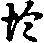手子。於是須菩提作神通。遂滅此手。令如虗空。有言尊者可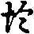頭面。又滅頭面還如虗空。又言好身體。又滅其身總同虗空。並令不見。於是如人心生忙懼。為言尊者涌身向上。舉頭於虗空。喚言尊者尊者。還自虗悔過。於虗空中求哀懺悔。深知此身皆同虗空。故下經云。諸法不生不滅。乃至無有高有下。猶如虗空。即其義也。於是尊者忽然現身。女人言。尊者何處去來。答言。我元在此。女人見此事已。便證無生法忍。故知虗空亦為佛事。又可以觸而為佛事。即如花嚴經中。善財童子。經百廿城訪善知識。有人報言。彼大城中有一女人。名和修蜜神。汝可於彼求受諸法。童子即就其家叩門而入。彼女人問言。汝有何事而來至此。童子答言。求妙法故來至此。女人問言。汝能受我種種駈使。不違我命不。答言能。於是此女堂中羅綺芬芳。珠寶暐曄。此女人端正。諸相圓滿。人天無疋。□語童子言。若欲求法。當捉我手。童子不肯。遂便走出。自思念言。我來求法。何為今日逢此婬女。欲障道耶。又自念言。我今為法但論心貞。身觸求法。即迴參禮。於窓中望見室中。一切十方三世諸佛。皆在室中。於是女人喚童子直向床前。把女人手已。自然證得無量無邊甚深法藏。又令捉臂。復證無量無邊三昧。又令摩挲胸及腋下等。復證得無量無邊甚深三昧。能解無量百法明門行。故知觸為佛事。
疏云要足聞熏習求出故者。此下經云。假使有人。行五波羅蜜。經無量劫。不如有人聞此法花經。一念生隨喜心功德。過前百千萬倍。又般若經云。三時捨恒沙身命布施經無量劫。不如聞此般若波羅蜜多經。受持讀誦一四句偈功德。過前百千萬倍(如是文大有)。故知欲證菩提。先須聞熏習。聞慧既生。思修之慧即具。三慧成滿。成出世故。
八問答分別者。就答中。開為六句。或五句亦得。初有三無一。即疏主如來有大定大智大悲等三。無一者。即久離戲論。曾不說法。二就強緣。即此文義相以下文是。三引論證成。即古無攝大乘論云是。四引經證成。即經亦言始從成道已下文是。五因。論復自說下是。六喻合。
隨八時者。亦可是花嚴會中八念也。謂晝四夜四時為八。亦言作八呼召體業具位從屬。依呼隨墮在一處故。古解。隨墮八時者。是阿瑟扠。阿瑟扠者。此翻為八時。此翻梵語義稍差殊。靜三藏云。隨瑟證。此云樂欲。梵語聲勢相濫故也。謂世尊有三種大願大智大悲等故。隨眾生樂欲聞何義。自有長行偈頌。聚集顯現。文義相生。應言隨墮樂欲。引此證佛不說法。但取眾生為聞體。
直非直說者。長行為直。偈頌為非直。或名詮自性為直。句詮差別為非直。亦可質語所說為直。巧妙言辭為非直。
聚集顯現者。依五心章所明。有十二心。及十四心。如言諸行無常。具道諸字。即是卒爾耳識。同時意識。共聞諸聲。又尋求意識。分別名句。諸字既爾。行無常亦然。四各三心。三四十二。既知此句詮諸行無常。即有染淨心。簡擇是非。後又有決定心。總成十四心。由眾生有增上業力故。此文義相。皆悉聚集眾生識上。以此為體也。此意說。眾生心上影像為教體。不說本質教也(云云)。
以能善入。是菩薩名也。此菩薩。於薄伽梵前。說阿毗達摩經。有攝大乘。如來印可。乃得成經。今難意者。為前但執眾生識上。善根力故。文義相生。無能說者。故此難云。若言如來不說一法。何故此菩薩說已。如來印之。乃得成經。斯即菩薩如來。但是能說。何故但云。聞者識上。而為教體性(答如疏文)。如勝鬘經。並無佛語。直至經末。如來印可。亦名為經。又十地經。金剛藏菩薩。解脫月菩薩。於他化自在天摩尼寶殿。為天眾說十地經。如來印可。即以為經。
彼增上生故作是說者。說善入大乘菩薩。為增上力故。令於聞者識中。文義相生。亦非菩薩自能說法(云云)。
此中龍軍論師。親光菩薩。或云有說。或言無說。今且略敘兩家有無意況。初言無者。即真諦三藏。清辨論師。龍軍宗等。不立諸法。故掌珍偈云。真性有為空。如幻緣生故。無為無有實。不起似空花。此偈初二句。破依他無。後之二句。不立圓成。二邊中道皆不立。
如云彼增上緣力令於夢中得論呪等者。此是喻合。西方有婆羅門。一生已來。祠祀天神。欲求聰明道術。令於一切義理。皆悉解了。或於三年五年。相連不斷。天神愧之。即於夢中。教其誦論及呪。便得聰明。世間呪術無不解了。今說經者。亦復如是。天神已慚愧故。令於夢中得論呪等。曾不對面親教誦呪。諸佛大悲本願力故。令彼識上文義相生。非佛親說。何以故。增上力故也。即如此方高王觀世音經。元無世人說。夢中授也。但是自心成熟。無人對面為說法故。
二親光論師等。亦有六句。一無戲論。故名為說。此中亦有有三無一。即蘊處界。對前三故。二就體願。故名為說。謂宜聞者以下是。三就因。為聞者識上以下文是。四引論證成。謂世親說言下是。五引經證成。謂由此經說下是。六引念喻成。如末尼天皷等是。此之六句。對前六門。明如來說法。親光言有說者。據佛利他。後得智之中。有五種思擇。安立思擇中。而為眾生說三乘教。此為本質教也。眾生識上文義相現。雖不親得。然似彼相。此為影像教也。然本質教。一向無漏。一相一味。影像之教。通漏無漏。眾生尋彼影教。悟解不同。種種差別。故通有漏也。
涅槃經說喻云。由如照鏡。面有好惡。本面無分別。即是本質。本質之教無分別故。鏡中面有好惡。即是影像。影像之教有三乘別故。即道一雨所潤。是本質。三草潤各不同。是影像。或以刀照面。刀橫面橫。刀竪面竪。油中見面即黑。清水照面即白。銅器傍照。即中高四下。此即由緣不定。面有參差。影像本質。義例應知。
然質影教。諸宗不同。初唯質無影者。即正量部親光論等。執法實有故。二唯影無質者。即小乘經論。經部師宗毗婆沙無性宗等。但言。聞者識上文義相生。不言說故。三影質俱存。即花嚴法花對法唯識清辨宗等。四質影俱無。即中百等論。般若等經。一義不立。一向歸空。故彼論言。若有所得空。應當有所空。所空不可得。何況得於空。今親光同護法無著等宗。教有質影。佛慈願力。名質教起。眾生識上善根熟力。能聞彼教。即影像生。兩相感擊增上緣故。名為說法。由此護法菩薩唯識偈云。展轉增上力。二識成決定。即其義也。
言謂餘相續識差別故令餘相續差別識生彼此[牙-(必-心)+?]為增上緣故者。相續。謂佛與眾生。俱有五蘊相續。一期報體。
言餘者。說者是聽者之餘。聽者是說者之餘故。故兩句法云餘相續也。由彼世尊說者本願緣力。識心之上。作三乘五乘常無常差別為說。故令眾生聞者善根力故。識心亦作三乘五乘常無常差別解也。
故言令餘相續差別識生。此即質教也。故言彼此互為增上緣故者。此中不但是增上緣。望彼質教。亦有所緣。謂令彼識上文義相生。即影像教也。所慮所託。名所緣緣。所慮者。影像教也。自心緣慮。所託者。質教也。託本質。影方生故。
疏云具有蘊處界等者。謂佛有無漏五蘊。捨無常色。獲得常色。受想行識亦復如是。又如來妙色身。即是色蘊。
又。云何得長壽。[囗@力]力者。並是無漏五蘊。若為得知亦能說法。故下經云。願佛開微密。廣為眾生說。故知說法。
疏云。由離分別名無戲論等者。謂分別執著心中說法。既有戲論。既證無分別智說法。故無戲論。豈不說法名無戲論。所言不說者。即是無分別。非謂不說即不說法。故般若經。菩薩不取福德。名取福德也。遠法師。依淨名經。釋如來不說法云。外離分別。名無戲論。此解極踈。應云心離分別。內外俱遣也。
疏云。此中二解隨彼兩文綺互解釋者。且略解者。龍軍論師。以如來本願緣力故。眾生識上文義相生。若親光等。謂眾生善根力故。令如來識上文義相生。即綺互解釋。
今別廣釋者。龍軍師等。據自義而不說。親光等。准何理而有說。解言。不說且有三義。一依真理正體無分別。故言不說。金剛般若論中云。平等真法界。佛不度眾生。二依法同故不說。謂三世諸佛說法共同。述而不作。更無別法說也。三依無執著故言不說。謂諸佛雖說種種諸法。而不執著文字戲論分別相也。故大般若楞伽云。始從成道。終至涅槃。於其中間。不說一字。維摩經云。夫說法者。無說無示。金剛般若云。如來無所說法。又云。如來有所說法。即為謗佛。金光云。佛果位中。唯有正智如如。准此等經。云佛不說也。
答。即如迦旃延。神力被娑剌拏王。令打睡已。後夢中見種種境界。自見還俗起兵伐摧代多王。見彼叛代多王擒其自身。欲將刑罸。驚怖覺悟而不還俗。此即夢中自得境界。非有實事。此廣自緣。下當具述。又如經中說。佛在時。有一女人。僧次請僧。就家供養。并請說法。行至寺見老度僧。女請歸家。供養了即請說法。老師自知不解說法。語女言。可深低頭。便私走歸寺。其女舉頭。既不見僧。深生慚愧。即是聖中。更至寺中。至誠推逐。望得見僧。僧既耻女。竟不敢出。女不見僧。深生自云罪業。由斯自責。即證聖果。高王觀世音經。義亦同此。曾參母憶子遂嚙指。曾子心痛。便生喚解。此例然。
又如世間虎嘯風生。龍吟雲起。虎自鳴。無心令彼風雲生起。春秋冬夏陰陽去來。草木萌芽。有生有死。父子之道。皆出天性。法等使然。此亦如是。眾生與佛。言不說法而能聞者。義同前喻也。
二親光等言佛說法者。佛既有無漏色聲。由慈悲本願緣力。令彼色聲有言說故。故涅槃經云。已說法者。如爪甲土。其未說者。如大地土。又已說者如手中葉。其未說者如林中葉。勝鬘經云。如來妙色身等。法花已說如海一渧。大般若經三十二相。第廿六相。世尊梵音詞韻弘雅。隨眾多少無不等聞。八十種好中第六十五。世尊說法。隨眾大小等。第七十四。世尊說法。威儀次第等。又大般若云。世尊音聲。任運能遍三千大千界。十地論云。說者聽者俱以二事。一者善聲。二者善字。准此等諸文。知說法也。
又解說不說者。據理不說。據智即說。據正體智不說。後得智即說。據法報不說法身說。報身自受用身不說。他受用身即說。據攝化歸真不說。從真流俗即說。據體不說。論用即說。
問。龍軍親光皆云增上緣力。何故差別有說不說。解。龍軍即無說增上。親光即說有增上。或遠增上延增上等。
又并州法師云。若言如來曾不說法。皆引經證。或言始從成道。終至涅槃。不說一字者。即此語者。是誰之說。應將喻合。景龍年中。奉勅差竇長史於汾州簡點。有一介人。實不患頭。且擬試誑。報使人言。某甲患頭已來經今五年。□看不得。使人報言。何為州縣無案。答云。某甲貧下百姓。不求守曹司。使人言。此事必辭爾。依判過後。又有一人佯啞。使人言。看此漢欲似不啞。索枷棒來打之十下。耐痛不得。遂失口言。某甲實啞。於是使人大咲。你既患啞不語。實啞之言。此從何出。故知始從成道等。亦復如是。故知前喻。義不正也。不說之言何起。
疏云。應知說此如是我聞等。佛地論文也。言阿難能轉離□□增減異分等過者。謂眾生不同。凡有九道。雖說經教。器受不同者。言九道者。菩薩緣覺聲聞天人修羅鬼畜等地獄。然佛說法。無非法。無非時。無非器。無非處。阿難器處具無。器即總持不忘。處即人天之身。此之二義。應四句料簡。一是器非處。利根龍鬼等。二是處非器。鈍根人天身。三亦處亦器。即利根人天身。四非處非器。即鈍根鬼畜等。今阿難具人具處。復總持不忘。具器故。傳佛教無增減異分過也。異分者。以前為後。以後為前。事理相乖。廣略差殊。是異分也。餘障同□或分離不同。阿難全離此過。
釋時中。分為四門。一從初時。至道理已來。明說聽時。二從道理已下。至唯意所緣已來。明時義。三唯意所緣下。至此言一時已來。明時體。四已下至明問答妨難。
益法師分為十對。初內外時。二古今時。三縱橫時。亦云橫竪時。四感應時。五情理時。亦名離合時。六法境時。七簡持時。八總別時。總別時中。有總簡別簡。九問難。十問答。
初內外時者。即真諦三藏釋十種時。如揩法師淨名疏也。外謂外道二時度邪時。二古今時。
三橫竪時。即疏云法王啟化等。竪者。謂如來應三乘機。所說教法。橫者。謂現坐眾生聽佛所說。稟教悟解。說聽究竟。就得益論。總名一時。太一法師云。喚為相續。說者聽者。事敘終畢。雖經多時。並名一時。如涅槃云。佛告比丘。我於一時在申首林。我於一時在恒河岸等。皆是此例。如亦世間往前所作種種事業。雖歷一年二年。雖過多年。因事談說。但我等當時一時之間。忽作此事。中說聽究竟。實有多時。今言一時。義同於此。
四名義時者。即感應文是。謂眾生機感正熟。如來應眾生機熟之時。不前不後。應機而說。名為一時。亦如經中說偈云。如母乳孾兒。經月而無漏。孾兒咽喉閉。乳母欲何為。乳母孾兒。孾兒正思□乳之時名感。慈母應時而乳。不前不後名應。若有前後。兒即啼哭。孾兒喉若閉。乳母欲何為者。謂眾生根機不熟。如來不可應機說法。如鷄之孚子。初生卵時。恐卵冷凍。冷凍煞其子。常將其身。轉來轉煖之。日月滿足。聽其卵中。如其聲。即須應時啄破。如不應時。其子即死。啄卵出後。隨母覓食。鵄烏欲搏。其母鳴覺。大張兩翼。其子一時就母翼中。即時得免彼鵄烏之難。眾生亦爾。無始時來。無明[穀-禾+卵]眠縛纏。不能出離。由如鷄卵未出相似。後機漸熟。如來以智慧嘴。啄破無明之[穀-禾+卵]。令諸眾生聞於教法。一心修道。出離生死。由如出卵。若諸眾生貪著五塵。不能惠捨。如來即鳴覺說法。令其覺悟。生死五塵皆歸敗壞。由如從翼孚子相似也。太法師名相遇會。說者聽者須同故。
五情理即道時。唯就現在五蘊法。以剎那生滅色心之上。變作三時。謂已生已滅名過去。已生未滅名現在。未生未滅名未來。即以已生已滅所酬名□過。未來未滅所引後時。名為未來。對前後世。名為現在。色心之□。知過去故名天眼明。知未來故名他心明。知現在故名天耳明。此□三世法。唯現世識上。假立三世。此三世體。都無實體。故知亦名神通時。以神通力。知三世故。
疏云。即說聽者五蘊諸法剎那生滅。乃至假立三世總名一時者。謂說聽二徒。各有諸蘊。於其蘊上故立時義。然時既唯有為法上建立。故云剎那相續。故唯識云。然諸有為法因緣力故。本無今有。蹔有還無。表異無為。假立四相。本無今有之位名生。生位蹔停。即說為住。住別前後。復立異名。蹔有還無。無時名滅。前三有故。同在現在。後一是無。故立過去。如何無法與有相表。此復無為相何失。生表有法先非有。滅表有法後是無。異表此法非凝然。住表此法蹔有用。故此四相。於有為法雖俱名表。而表有異。此依剎那假立四相。一期分位亦得假立。初有名生。後無名滅。生已相似相續名住。即此相續□受亦異。是故四相皆是假立。此即明剎那時也。
自此已下明□□時。即疏云隨心分限變作短長。若身心中遭苦。及惰厭迷□。□宜即長。如受樂時。及勤欣悟等時即短。故攝論云。處夢謂□年。覺乃須臾頃。悟時雖無。攝在一剎那。又云。愚者修少時。怠心疑已久。智修無量劫。勤勇謂須臾。此即墯故時長。勤故時短。此義明矣。如是列士欲求仙法。經十二年。勤心勵力。欲求仙道。有一仙人。常日在傍誦呪教示。立一壇場。仙人預知前事。遂於壇塲掘一水池。後十二年滿。唯欠一夜。語烈士言。汝今努力。迄至天明。必不得睡。不得語。如其出聲。仙道不得。天神煞汝。於是此人專心住想。不聽作聲。仙人唱呪既久。遂蹔失睡。此之烈士遂剎那間即出失睡。遂大叫喚。於是天神嗔怒。空中下火欲燒此人。仙人拽之浸此池中。方始醒覺已。語言。十二年滿。功夫尅就。如何唯有少時不能專心。遂大叫喚。烈士答云。此是業也。非我本心。我蹔失睡。夢見捨命生南天竺。長大已後。取婦生兒。以仙令我不語。年至八十。竟不出語。生得一子。非常怜愛。婦語我言。汝若出語。即留□。你若不語。我即將刀斫此孩兒以為兩段。我竟不語。婦遂煞兒。□□舉刀煞兒遂叫喚。非本心也。故知蹔時在夢。乃經八十餘年者。□□唯識所變。聽法之徒。隨心分限。變作短長。即如下文六十小劫謂如食頃等。此意也。
疏云。非一生滅之時者。非一剎那生滅念念之一時。唯取說者聽者五蘊諸法剎那生滅等。說法事聽竟。假於色心分位立三世。總名一時。
又准梁攝論。有三義。一轉法輪時。說者正說。聽者正聽。名轉法輪時。第二和合時。謂機感說。教主正應。感應和合。名和合時。三平等時。離惛沉掉舉。不顛倒聞經。名平等時。即初轉法輪。名有教相時。
第二空教時者。法花非空非有義。即別相時所攝。亦出家佛制戒律。未受戒人。不同布薩。所有戒律。並不得讀。國王大臣得聞。庶人不得聞。三摩耶時者。此云破邪見時。謂五部阿含。九分達磨。不簡黑白。一切得聞。
問。今說此經是何時。答。准三皆法輪。是別相時。若據二乘。亦名破邪見時。故竺法護。飜為正法花經也。
又智度云破邪時者。乃是外道。此云破邪。言是二乘。二乘之人既非外道所攝。云何名邪。
答。如般若經觀化身相。言行邪道。□見諸佛。化佛望法身。化身是邪。二乘望大乘。小即是邪。此亦何□。
六法境相對者。准大□□此時體者。唯是第六意識所緣。五八等識。不能分別。不能緣時。七意□亦執第八以為我。然唯內緣。不能緣外。所以第六能緣於時。雖然。此就不自在者說。若就自在。如來七八二識。各緣時分。
若據法。唯法界法處所攝。若據境。通不相應行蘊所攝。薩婆多宗。十四不相應中。無時體。但於五蘊上辨時體。即是攝假從實。此中應四句分別。一攝假從實。即薩婆多宗。唯緣五蘊辨時。不同大乘色心分位上假立。此宗執一切諸法有實。故言攝假從實。
二攝實從假者。即攝大乘位。唯約三數。世數識心假相分別。謂識上實現相故。此望大乘正義。亦是依他起性。亦是實有。三熏習中。名言熏習也。
三亦實亦假者。即大乘正義。識體是實分位上。假立時分。十四不相應行時數為體。十二處中。法處。十八界中。法界所攝。
又有善惡。如下第二偈云。我本著邪見。為諸梵志師。即著邪時。世尊知我心。拔邪說涅槃。我悉除邪見。即歸正時。於空法得證。即證理時。爾時心自謂。得至於滅度。□□悟理時。而今乃自覺。非是實滅度。即悟大時。此除多時五蘊□位名時。豈世俗時也。修惡之時名惡時。修善之時名善時。□□五蘊有此之時也。
七簡持對時者。謂簡彼相續剎那等。持者。准疏云。是聽者機熟。感佛為說等是也。
八總別者。總即唯言一時。別如疏。就多法論。不定說時。名之為別時也。
疏云。不定約四時等者。謂破四時。但應京師東都可應時節。嶺南已北。寒熱不同。況四天下理然別也。然西方風俗。分十二月以為三時。即律中言。春殘一月在。當求雨浴衣。從三月十六日。數至四月十五日。是一月。乃至七月十五。名為雨際時。八月十五日。至十二月十五日。為寒際時。十二月十五日。至三月十五日。名春際。與此方即別。時者。梵云劫婆。此云時分。
疏云。照二天下同起用故。如午時西方日在。北方為夜半。東方已沒故。如□□時。西方正午。北方日出。東方夜半。故云常照二天下也。
又解。時□□□。□四相時。即生住等。外四相者。成劫住劫等。亦有一期四相。從生至老。從□□□。々至死。
又西方有三時。無秋時。四月為一時。然凡夫心麤。但見□□□。春秋冬。夏以為變改。殊不知有大四相。小四相者。即剎那生□。□□□中有九百生滅。一彈指頃有六十剎那。何以得知一剎那有九百生滅。即如裂絹。雖是一聲。不妨次第而斷。亦如截煞。
故仁王經喻云。凡夫但見大四相。不見小四相。剎那生滅之相。如細毛塵等。在於眼中極為碍。若在手中。一無障碍。凡夫亦爾。以心麤故。不見剎那生滅四相。聖者覺之。如毛在眼。
疏云。若說四時等流行不遍故者。四時雖此國所行。餘方無故。天下理然不有。此經既是諸方流通。不別定其時分。故言一時。即世人言一時之間也。
九問難者。即就諸經中有說相續者已下文是。此意。既言不許安時節。及成道後說法時節者。何義故諸經皆說時節。亦可若言一時通於長短久遠。乃十二時無不攝盡。豈可得將別席時來於此。為欲定說時。義不周備。故但言一時。
十問答者。已下問答文是。謂處中淨穢。由是事法。故須定說處。時□□□。□□識變。為此不說定時也。
難。處是於外相。淨穢有殊定說處。時是□□□。凡聖有殊定說時。
答。處是於事法。外法麤故說二處。時□□心淨。心法微細不分二切。
勘 訖